This report includes: (1) Hierarchical variance structure for better regularization, (2) All outputs transformed to natural, interpretable scales, (3) Multiple bandwidth sensitivity analysis for Bayes factors, (4) Posterior and prior predictive checks, (5) ROPE probabilities reported alongside effects/contrasts for practical significance, (6) ROPE applied on transformed scale for consistency with the model, (7) Visualizations with actual values.
| dataset | arch | group | n_rows |
|---|---|---|---|
| AE | Swin | Swin U-Net | AE | 10 |
| AE | Terramind | Terramind | AE | 10 |
| AE | U-Net | U-Net | AE | 10 |
| PS | Swin | Swin U-Net | PS | 10 |
| PS | Terramind | Terramind | PS | 10 |
| PS | U-Net | U-Net | PS | 10 |
| S2 | Swin | Swin U-Net | S2 | 10 |
| S2 | Terramind | Terramind | S2 | 10 |
| S2 | U-Net | U-Net | S2 | 10 |
1. Hierarchical Variance: All models now use hierarchical priors for sigma, improving regularization even with equal sample sizes (n=10).
2. Natural Scale Outputs: All effects are reported on both transformed and natural/interpretable scales (e.g., absolute changes, percentage changes, probability changes).
3. BF Sensitivity Analysis: Bayes factors computed with multiple KDE bandwidths (0.1, 0.3, 0.5, scott, silverman) to assess robustness.
4. ROPE Consistency: Region of Practical Equivalence (ROPE) is now applied on the transformed scale where the model lives, ensuring statistical consistency.
ROPE probabilities: In addition to Pr(>0), we report Pr(Δ>ROPE), Pr(|Δ| 5. Predictive Checks: Prior and posterior predictive checks included to validate model assumptions and fit.
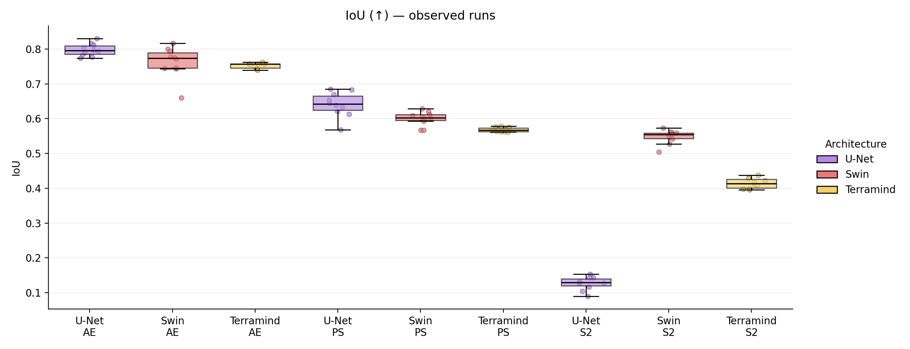
Modelled on logit scale; reporting mu_orig on original scale. Hierarchical variance improves regularization.
| group | mean | sd | hdi_2.5% | hdi_97.5% | Pr(rank=1) | Pr(rank=2) | Pr(rank=3) | Pr(rank=4) | Pr(rank=5) | Pr(rank=6) | Pr(rank=7) | Pr(rank=8) | Pr(rank=9) | E[rank] | Pr(best) | Pr(best)_prior | sigma_mean | sigma_sd | sigma_hdi_lo | sigma_hdi_hi | Pr(Δ>ROPE) | Pr(|Δ|<ROPE) | Pr(Δ<-ROPE) |
|---|---|---|---|---|---|---|---|---|---|---|---|---|---|---|---|---|---|---|---|---|---|---|---|
| U-Net | AE | 0.7980 | 0.006000 | 0.7840 | 0.8100 | 0.9910 | 0.009000 | 0 | 0 | 0 | 0 | 0 | 0 | 0 | 1.009 | 0.9910 | 0.1060 | 0.1240 | 0.03100 | 0.07300 | 0.1850 | NaN | NaN | NaN |
| Swin U-Net | AE | 0.7640 | 0.01300 | 0.7390 | 0.7920 | 0.009000 | 0.8059 | 0.1851 | 0 | 0 | 0 | 0 | 0 | 0 | 2.176 | 0.009000 | 0.1260 | 0.2250 | 0.04800 | 0.1460 | 0.3210 | 0.001750 | 0.03862 | 0.9596 |
| Terramind | AE | 0.7530 | 0.003000 | 0.7470 | 0.7590 | 0 | 0.1851 | 0.8149 | 0 | 0 | 0 | 0 | 0 | 0 | 2.815 | 0 | 0.1160 | 0.04900 | 0.01400 | 0.02800 | 0.07600 | 0 | 0.0002500 | 0.9998 |
| U-Net | PS | 0.6410 | 0.01200 | 0.6150 | 0.6630 | 0 | 0 | 0 | 0.9950 | 0.004750 | 0.0002500 | 0 | 0 | 0 | 4.005 | 0 | 0.1180 | 0.1610 | 0.03900 | 0.09800 | 0.2390 | 0 | 0 | 1.000 |
| Swin U-Net | PS | 0.6000 | 0.008000 | 0.5850 | 0.6160 | 0 | 0 | 0 | 0.005000 | 0.9940 | 0.001000 | 0 | 0 | 0 | 4.996 | 0 | 0.1080 | 0.09600 | 0.02600 | 0.05300 | 0.1450 | 0 | 0 | 1.000 |
| Terramind | PS | 0.5680 | 0.002000 | 0.5640 | 0.5730 | 0 | 0 | 0 | 0 | 0.001250 | 0.9916 | 0.007125 | 0 | 0 | 6.006 | 0 | 0.09000 | 0.02900 | 0.008000 | 0.01600 | 0.04400 | 0 | 0 | 1.000 |
| Swin U-Net | S2 | 0.5480 | 0.007000 | 0.5350 | 0.5640 | 0 | 0 | 0 | 0 | 0 | 0.007125 | 0.9929 | 0 | 0 | 6.993 | 0 | 0.1100 | 0.09100 | 0.02500 | 0.05200 | 0.1410 | 0 | 0 | 1.000 |
| Terramind | S2 | 0.4150 | 0.006000 | 0.4040 | 0.4260 | 0 | 0 | 0 | 0 | 0 | 0 | 0 | 1.000 | 0 | 8.000 | 0 | 0.1240 | 0.07000 | 0.01900 | 0.03900 | 0.1080 | 0 | 0 | 1.000 |
| U-Net | S2 | 0.1270 | 0.007000 | 0.1140 | 0.1400 | 0 | 0 | 0 | 0 | 0 | 0 | 0 | 0 | 1.000 | 9.000 | 0 | 0.1020 | 0.1860 | 0.04300 | 0.1150 | 0.2720 | 0 | 0 | 1.000 |
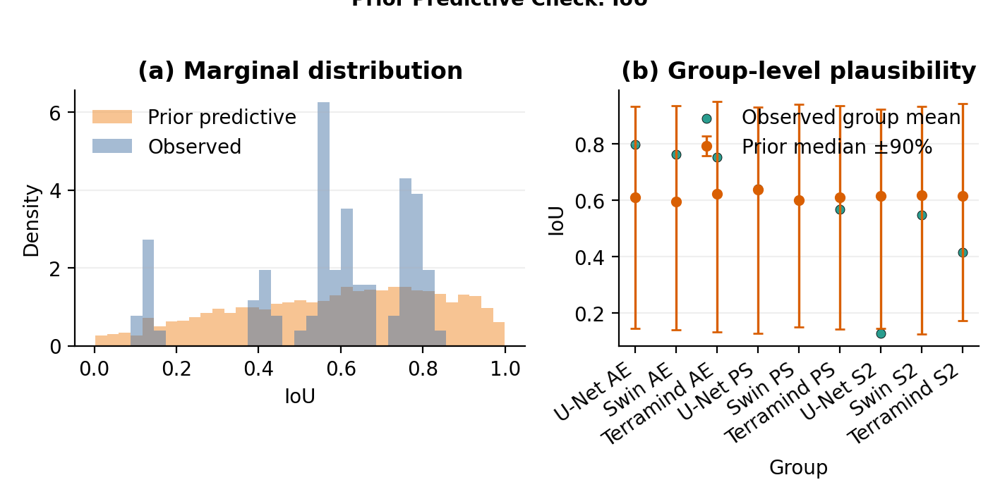
Check if priors are reasonable on original scale.
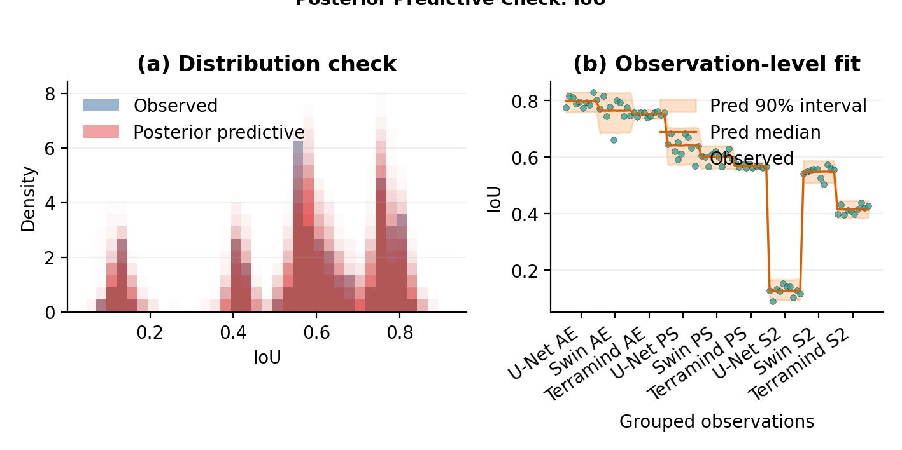
Red overlay shows model predictions; blue shows observed data.
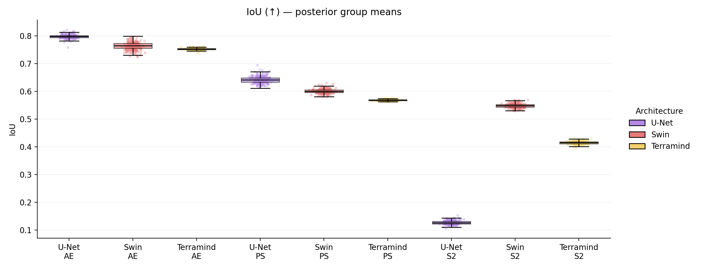
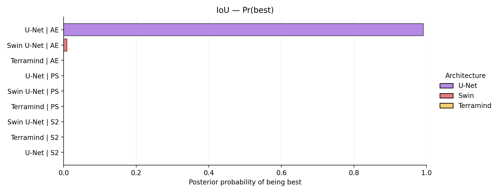
For each adjacent pair in the expected-rank order, we report the probability that the higher-ranked group is (a) better, (b) meaningfully better (exceeds ROPE), or (c) practically tied (inside ROPE). ROPE is applied on the model's transformed scale for consistency.
| rank | group | next_rank_group | Δ_mean | Δ_lo | Δ_hi | Pr(better) | Pr(Δ>ROPE) | Pr(|Δ|<ROPE) | Pr(Δ<-ROPE) |
|---|---|---|---|---|---|---|---|---|---|
| 1 | U-Net | AE | Swin U-Net | AE | 0.03326 | 0.004576 | 0.06222 | 0.9910 | 0.9596 | 0.03862 | 0.001750 |
| 2 | Swin U-Net | AE | Terramind | AE | 0.01167 | -0.01530 | 0.03888 | 0.8149 | 0.5783 | 0.3605 | 0.06125 |
| 3 | Terramind | AE | U-Net | PS | 0.1114 | 0.08771 | 0.1369 | 1.000 | 1.000 | 0 | 0 |
| 4 | U-Net | PS | Swin U-Net | PS | 0.04083 | 0.01017 | 0.06708 | 0.9950 | 0.9744 | 0.02413 | 0.001500 |
| 5 | Swin U-Net | PS | Terramind | PS | 0.03199 | 0.01650 | 0.04796 | 0.9990 | 0.9909 | 0.009125 | 0 |
| 6 | Terramind | PS | Swin U-Net | S2 | 0.01998 | 0.004676 | 0.03497 | 0.9929 | 0.8555 | 0.1442 | 0.0002500 |
| 7 | Swin U-Net | S2 | Terramind | S2 | 0.1336 | 0.1145 | 0.1509 | 1.000 | 1.000 | 0 | 0 |
| 8 | Terramind | S2 | U-Net | S2 | 0.2881 | 0.2706 | 0.3051 | 1.000 | 1.000 | 0 | 0 |
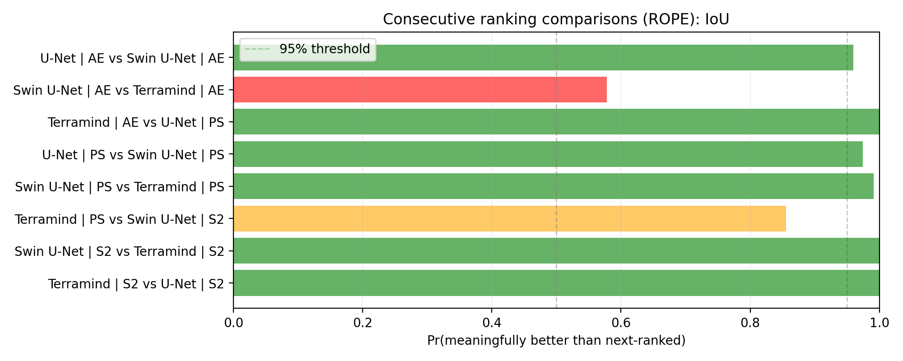
For each adjacent pair in the expected-rank order, we report the probability that the higher-ranked group is (a) better, (b) meaningfully better (exceeds ROPE), or (c) practically tied (inside ROPE). ROPE is applied on the model's transformed scale for consistency.
| rank | group | next_rank_group | Δ_mean | Δ_lo | Δ_hi | Pr(better) | Pr(Δ>ROPE) | Pr(|Δ|<ROPE) | Pr(Δ<-ROPE) |
|---|---|---|---|---|---|---|---|---|---|
| 1 | U-Net | AE | Swin U-Net | AE | 0.03326 | 0.004576 | 0.06222 | 0.9910 | 0.9596 | 0.03862 | 0.001750 |
| 2 | Swin U-Net | AE | Terramind | AE | 0.01167 | -0.01530 | 0.03888 | 0.8149 | 0.5783 | 0.3605 | 0.06125 |
| 3 | Terramind | AE | U-Net | PS | 0.1114 | 0.08771 | 0.1369 | 1.000 | 1.000 | 0 | 0 |
| 4 | U-Net | PS | Swin U-Net | PS | 0.04083 | 0.01017 | 0.06708 | 0.9950 | 0.9744 | 0.02413 | 0.001500 |
| 5 | Swin U-Net | PS | Terramind | PS | 0.03199 | 0.01650 | 0.04796 | 0.9990 | 0.9909 | 0.009125 | 0 |
| 6 | Terramind | PS | Swin U-Net | S2 | 0.01998 | 0.004676 | 0.03497 | 0.9929 | 0.8555 | 0.1442 | 0.0002500 |
| 7 | Swin U-Net | S2 | Terramind | S2 | 0.1336 | 0.1145 | 0.1509 | 1.000 | 1.000 | 0 | 0 |
| 8 | Terramind | S2 | U-Net | S2 | 0.2881 | 0.2706 | 0.3051 | 1.000 | 1.000 | 0 | 0 |
All effects shown on natural, interpretable scales. Multiple BF bandwidths show robustness of evidence. ROPE probabilities add a practical-significance view (meaningful vs negligible effects).
| param | Pr(>0) | Pr(Δ>ROPE) | Pr(|Δ|<ROPE) | Pr(Δ<-ROPE) | OR | Δp_mean | Δp_lo | Δp_hi | baseline |
|---|---|---|---|---|---|---|---|---|---|
| beta_dataset[AE] | 1.000 | 1.000 | 0 | 0 | 2.475 | 0.1923 | 0.1848 | 0.1990 | 0.5794 |
| beta_dataset[PS] | 1.000 | 0.9982 | 0.001750 | 0 | 1.112 | 0.02408 | 0.01598 | 0.03254 | 0.5794 |
| beta_arch[U-Net] | 0 | 0 | 0 | 1.000 | 0.7334 | -0.05771 | -0.06480 | -0.05032 | 0.5794 |
| beta_arch[Swin] | 1.000 | 1.000 | 0 | 0 | 1.321 | 0.05849 | 0.05035 | 0.06665 | 0.5794 |
| beta_interaction[AE×U-Net] | 1.000 | 1.000 | 0 | 0 | 1.585 | 0.08351 | 0.07417 | 0.09369 | 0.5794 |
| beta_interaction[AE×Swin] | 0 | 0 | 0 | 1.000 | 0.7282 | -0.06490 | -0.07554 | -0.05476 | 0.5794 |
| beta_interaction[PS×U-Net] | 1.000 | 1.000 | 0 | 0 | 1.601 | 0.09569 | 0.08394 | 0.1065 | 0.5794 |
| beta_interaction[PS×Swin] | 0 | 0 | 0 | 1.000 | 0.7467 | -0.06153 | -0.07306 | -0.04915 | 0.5794 |
| beta_dataset[S2] | 0 | 0 | 0 | 1.000 | 0.3636 | -0.2164 | -0.2242 | -0.2087 | 0.5794 |
| beta_arch[Terramind] | 0.9509 | 0.1741 | 0.8259 | 0 | 1.033 | -0.0007800 | -0.008887 | 0.007612 | 0.5794 |
| beta_interaction[AE×Terramind] | 0 | 0 | 0.0005000 | 0.9995 | 0.8676 | -0.01861 | -0.02921 | -0.007757 | 0.5794 |
| beta_interaction[PS×Terramind] | 0 | 0 | 0 | 1.000 | 0.8373 | -0.03416 | -0.04633 | -0.02188 | 0.5794 |
| beta_interaction[S2×U-Net] | 0 | 0 | 0 | 1.000 | 0.3946 | -0.1792 | -0.1886 | -0.1696 | 0.5794 |
| beta_interaction[S2×Swin] | 1.000 | 1.000 | 0 | 0 | 1.841 | 0.1264 | 0.1148 | 0.1380 | 0.5794 |
| beta_interaction[S2×Terramind] | 1.000 | 1.000 | 0 | 0 | 1.378 | 0.05277 | 0.04107 | 0.06430 | 0.5794 |
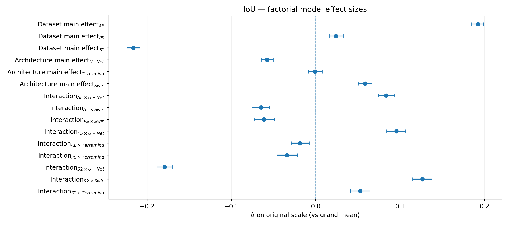
| dataset | arch | mean | hdi_lo | hdi_hi |
|---|---|---|---|---|
| AE | U-Net | 0.7976 | 0.7846 | 0.8103 |
| AE | Swin | 0.7653 | 0.7509 | 0.7794 |
| AE | Terramind | 0.7524 | 0.7380 | 0.7676 |
| PS | U-Net | 0.6415 | 0.6236 | 0.6607 |
| PS | Swin | 0.6005 | 0.5804 | 0.6182 |
| PS | Terramind | 0.5686 | 0.5483 | 0.5875 |
| S2 | U-Net | 0.1261 | 0.1173 | 0.1349 |
| S2 | Swin | 0.5479 | 0.5293 | 0.5681 |
| S2 | Terramind | 0.4150 | 0.3954 | 0.4336 |
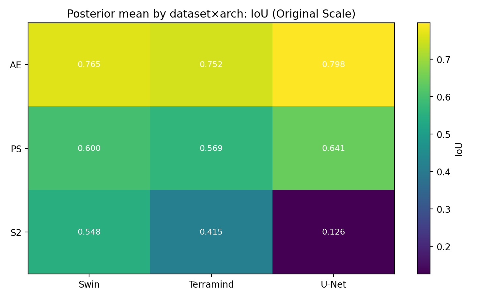
| dataset | contrast | Δ_mean | Δ_lo | Δ_hi | Pr(Δ>ROPE) | Pr(|Δ|<ROPE) | Pr(Δ<-ROPE) | Pr(>0) |
|---|---|---|---|---|---|---|---|---|
| AE | Swin − U-Net | -0.03222 | -0.05076 | -0.01260 | 0.0001250 | 0.007375 | 0.9925 | 0.0007500 |
| AE | Terramind − U-Net | -0.04520 | -0.06538 | -0.02600 | 0 | 0.0002500 | 0.9998 | 0 |
| PS | Swin − U-Net | -0.04102 | -0.06669 | -0.01475 | 0 | 0.01375 | 0.9862 | 0.0007500 |
| PS | Terramind − U-Net | -0.07292 | -0.1001 | -0.04626 | 0 | 0 | 1.000 | 0 |
| S2 | Swin − U-Net | 0.4218 | 0.4015 | 0.4441 | 1.000 | 0 | 0 | 1.000 |
| S2 | Terramind − U-Net | 0.2889 | 0.2677 | 0.3101 | 1.000 | 0 | 0 | 1.000 |
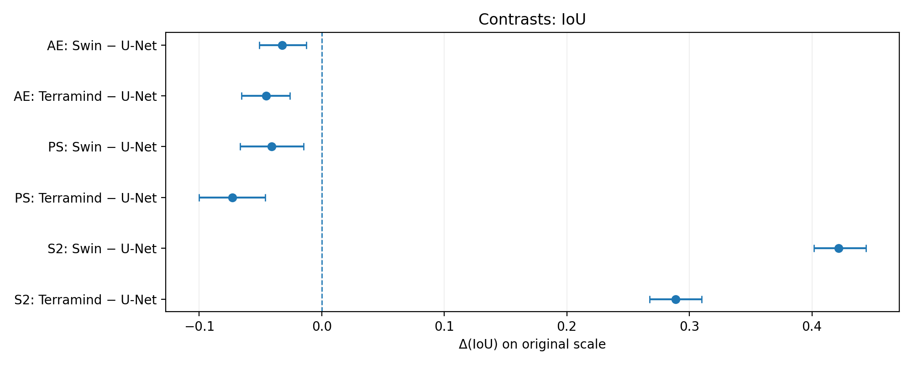
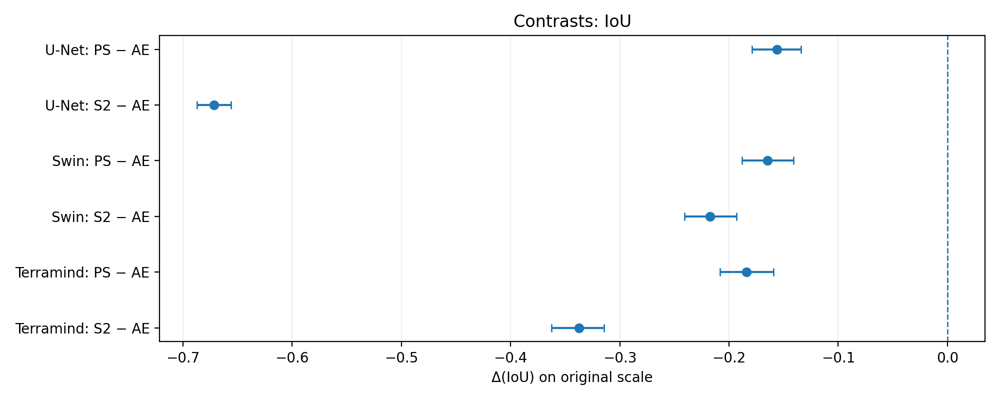
| arch | contrast | Δ_mean | Δ_lo | Δ_hi | Pr(Δ>ROPE) | Pr(|Δ|<ROPE) | Pr(Δ<-ROPE) | Pr(>0) |
|---|---|---|---|---|---|---|---|---|
| U-Net | PS − AE | -0.1561 | -0.1787 | -0.1340 | 0 | 0 | 1.000 | 0 |
| U-Net | S2 − AE | -0.6715 | -0.6869 | -0.6559 | 0 | 0 | 1.000 | 0 |
| Swin | PS − AE | -0.1649 | -0.1879 | -0.1409 | 0 | 0 | 1.000 | 0 |
| Swin | S2 − AE | -0.2174 | -0.2409 | -0.1929 | 0 | 0 | 1.000 | 0 |
| Terramind | PS − AE | -0.1838 | -0.2083 | -0.1594 | 0 | 0 | 1.000 | 0 |
| Terramind | S2 − AE | -0.3374 | -0.3626 | -0.3143 | 0 | 0 | 1.000 | 0 |
| scope | contrast | mean_original | hdi_lo_original | hdi_hi_original | Pr(Δ>ROPE) | Pr(|Δ|<ROPE) | Pr(Δ<-ROPE) | Pr(>0) |
|---|---|---|---|---|---|---|---|---|
| Overall (avg over datasets) | Swin − U-Net | 0.1162 | 0.1032 | 0.1293 | 1.000 | 0 | 0 | 1.000 |
| Overall (avg over datasets) | Terramind − U-Net | 0.05693 | 0.04363 | 0.07008 | 1.000 | 0 | 0 | 1.000 |
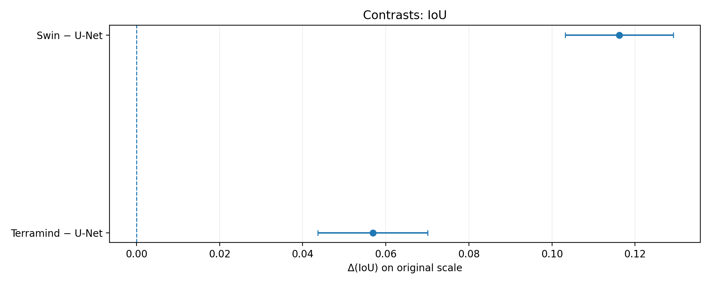
| scope | contrast | mean_original | hdi_lo_original | hdi_hi_original | Pr(Δ>ROPE) | Pr(|Δ|<ROPE) | Pr(Δ<-ROPE) | Pr(>0) |
|---|---|---|---|---|---|---|---|---|
| Overall (avg over arch) | PS − AE | -0.1683 | -0.1818 | -0.1554 | 0 | 0 | 1.000 | 0 |
| Overall (avg over arch) | S2 − AE | -0.4087 | -0.4216 | -0.3967 | 0 | 0 | 1.000 | 0 |
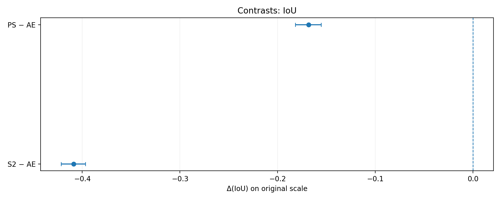
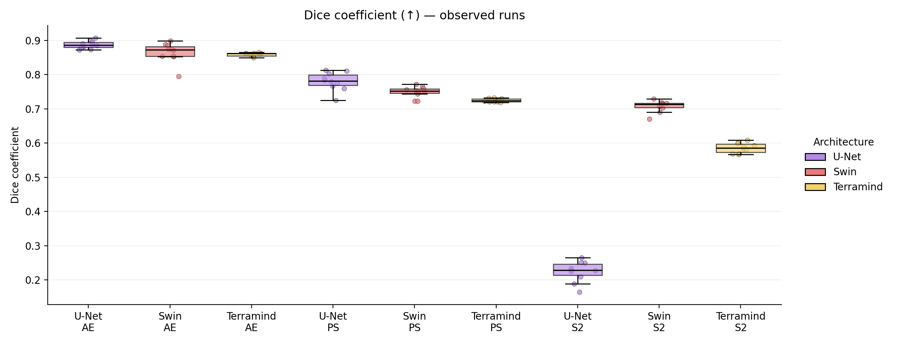
Modelled on logit scale; reporting mu_orig on original scale. Hierarchical variance improves regularization.
| group | mean | sd | hdi_2.5% | hdi_97.5% | Pr(rank=1) | Pr(rank=2) | Pr(rank=3) | Pr(rank=4) | Pr(rank=5) | Pr(rank=6) | Pr(rank=7) | Pr(rank=8) | Pr(rank=9) | E[rank] | Pr(best) | Pr(best)_prior | sigma_mean | sigma_sd | sigma_hdi_lo | sigma_hdi_hi | Pr(Δ>ROPE) | Pr(|Δ|<ROPE) | Pr(Δ<-ROPE) |
|---|---|---|---|---|---|---|---|---|---|---|---|---|---|---|---|---|---|---|---|---|---|---|---|
| U-Net | AE | 0.8870 | 0.004000 | 0.8800 | 0.8960 | 0.9894 | 0.01063 | 0 | 0 | 0 | 0 | 0 | 0 | 0 | 1.011 | 0.9894 | 0.1060 | 0.1240 | 0.03100 | 0.07200 | 0.1860 | NaN | NaN | NaN |
| Swin U-Net | AE | 0.8660 | 0.009000 | 0.8490 | 0.8820 | 0.01063 | 0.8057 | 0.1836 | 0 | 0 | 0 | 0 | 0 | 0 | 2.173 | 0.01063 | 0.1260 | 0.2250 | 0.04800 | 0.1460 | 0.3240 | 0.002375 | 0.03925 | 0.9584 |
| Terramind | AE | 0.8590 | 0.002000 | 0.8550 | 0.8630 | 0 | 0.1836 | 0.8164 | 0 | 0 | 0 | 0 | 0 | 0 | 2.816 | 0 | 0.1160 | 0.04800 | 0.01400 | 0.02800 | 0.07600 | 0 | 0.0002500 | 0.9998 |
| U-Net | PS | 0.7810 | 0.009000 | 0.7640 | 0.7990 | 0 | 0 | 0 | 0.9964 | 0.003625 | 0 | 0 | 0 | 0 | 4.004 | 0 | 0.1180 | 0.1600 | 0.03800 | 0.09800 | 0.2370 | 0 | 0 | 1.000 |
| Swin U-Net | PS | 0.7500 | 0.006000 | 0.7380 | 0.7620 | 0 | 0 | 0 | 0.003625 | 0.9960 | 0.0003750 | 0 | 0 | 0 | 4.997 | 0 | 0.1080 | 0.09600 | 0.02600 | 0.05600 | 0.1470 | 0 | 0 | 1.000 |
| Terramind | PS | 0.7250 | 0.002000 | 0.7210 | 0.7290 | 0 | 0 | 0 | 0 | 0.0003750 | 0.9931 | 0.006500 | 0 | 0 | 6.006 | 0 | 0.09000 | 0.02900 | 0.008000 | 0.01600 | 0.04500 | 0 | 0 | 1.000 |
| Swin U-Net | S2 | 0.7080 | 0.006000 | 0.6960 | 0.7200 | 0 | 0 | 0 | 0 | 0 | 0.006500 | 0.9935 | 0 | 0 | 6.994 | 0 | 0.1100 | 0.09000 | 0.02500 | 0.05000 | 0.1380 | 0 | 0 | 1.000 |
| Terramind | S2 | 0.5860 | 0.006000 | 0.5760 | 0.5980 | 0 | 0 | 0 | 0 | 0 | 0 | 0 | 1.000 | 0 | 8.000 | 0 | 0.1240 | 0.07000 | 0.01900 | 0.03900 | 0.1070 | 0 | 0 | 1.000 |
| U-Net | S2 | 0.2250 | 0.01000 | 0.2040 | 0.2450 | 0 | 0 | 0 | 0 | 0 | 0 | 0 | 0 | 1.000 | 9.000 | 0 | 0.1020 | 0.1850 | 0.04200 | 0.1140 | 0.2680 | 0 | 0 | 1.000 |
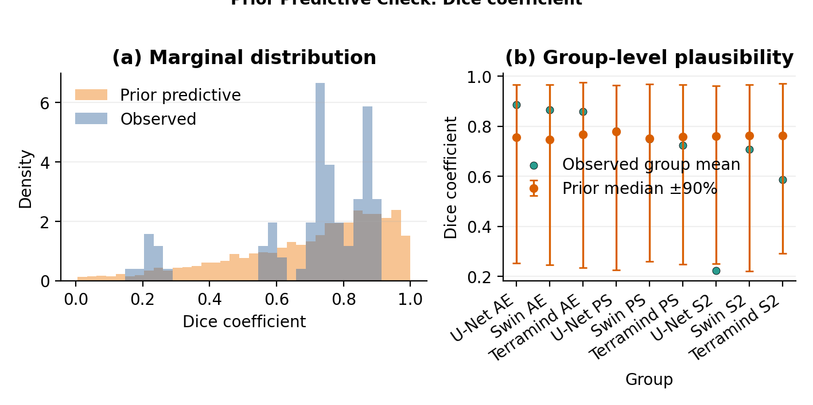
Check if priors are reasonable on original scale.
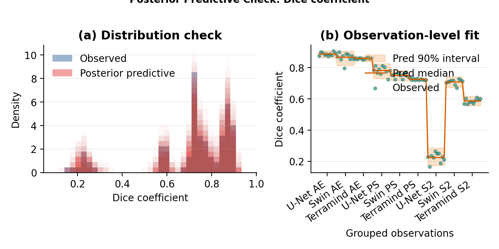
Red overlay shows model predictions; blue shows observed data.
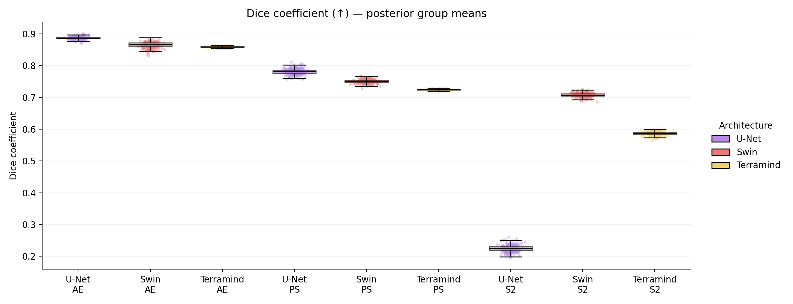
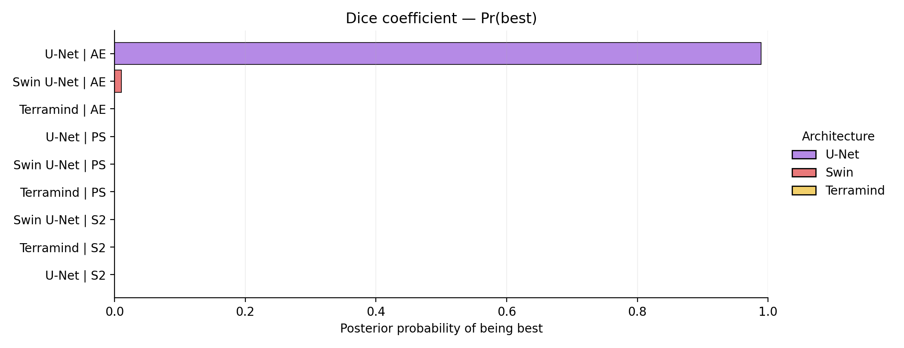
For each adjacent pair in the expected-rank order, we report the probability that the higher-ranked group is (a) better, (b) meaningfully better (exceeds ROPE), or (c) practically tied (inside ROPE). ROPE is applied on the model's transformed scale for consistency.
| rank | group | next_rank_group | Δ_mean | Δ_lo | Δ_hi | Pr(better) | Pr(Δ>ROPE) | Pr(|Δ|<ROPE) | Pr(Δ<-ROPE) |
|---|---|---|---|---|---|---|---|---|---|
| 1 | U-Net | AE | Swin U-Net | AE | 0.02115 | 0.002853 | 0.03996 | 0.9894 | 0.9584 | 0.03925 | 0.002375 |
| 2 | Swin U-Net | AE | Terramind | AE | 0.007459 | -0.01052 | 0.02349 | 0.8164 | 0.5847 | 0.3521 | 0.06313 |
| 3 | Terramind | AE | U-Net | PS | 0.07749 | 0.05989 | 0.09540 | 1.000 | 1.000 | 0 | 0 |
| 4 | U-Net | PS | Swin U-Net | PS | 0.03102 | 0.01018 | 0.05200 | 0.9964 | 0.9788 | 0.02075 | 0.0005000 |
| 5 | Swin U-Net | PS | Terramind | PS | 0.02547 | 0.01287 | 0.03766 | 0.9996 | 0.9904 | 0.009625 | 0 |
| 6 | Terramind | PS | Swin U-Net | S2 | 0.01671 | 0.004204 | 0.02960 | 0.9935 | 0.8668 | 0.1330 | 0.0002500 |
| 7 | Swin U-Net | S2 | Terramind | S2 | 0.1217 | 0.1063 | 0.1388 | 1.000 | 1.000 | 0 | 0 |
| 8 | Terramind | S2 | U-Net | S2 | 0.3616 | 0.3389 | 0.3860 | 1.000 | 1.000 | 0 | 0 |
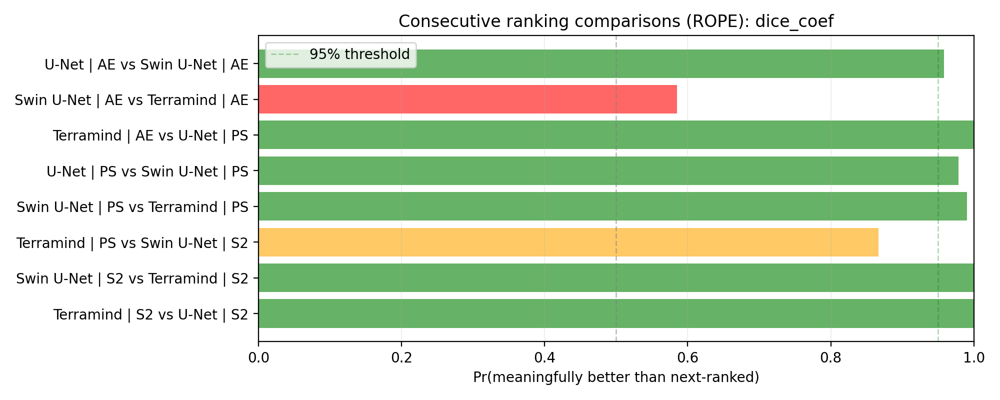
For each adjacent pair in the expected-rank order, we report the probability that the higher-ranked group is (a) better, (b) meaningfully better (exceeds ROPE), or (c) practically tied (inside ROPE). ROPE is applied on the model's transformed scale for consistency.
| rank | group | next_rank_group | Δ_mean | Δ_lo | Δ_hi | Pr(better) | Pr(Δ>ROPE) | Pr(|Δ|<ROPE) | Pr(Δ<-ROPE) |
|---|---|---|---|---|---|---|---|---|---|
| 1 | U-Net | AE | Swin U-Net | AE | 0.02115 | 0.002853 | 0.03996 | 0.9894 | 0.9584 | 0.03925 | 0.002375 |
| 2 | Swin U-Net | AE | Terramind | AE | 0.007459 | -0.01052 | 0.02349 | 0.8164 | 0.5847 | 0.3521 | 0.06313 |
| 3 | Terramind | AE | U-Net | PS | 0.07749 | 0.05989 | 0.09540 | 1.000 | 1.000 | 0 | 0 |
| 4 | U-Net | PS | Swin U-Net | PS | 0.03102 | 0.01018 | 0.05200 | 0.9964 | 0.9788 | 0.02075 | 0.0005000 |
| 5 | Swin U-Net | PS | Terramind | PS | 0.02547 | 0.01287 | 0.03766 | 0.9996 | 0.9904 | 0.009625 | 0 |
| 6 | Terramind | PS | Swin U-Net | S2 | 0.01671 | 0.004204 | 0.02960 | 0.9935 | 0.8668 | 0.1330 | 0.0002500 |
| 7 | Swin U-Net | S2 | Terramind | S2 | 0.1217 | 0.1063 | 0.1388 | 1.000 | 1.000 | 0 | 0 |
| 8 | Terramind | S2 | U-Net | S2 | 0.3616 | 0.3389 | 0.3860 | 1.000 | 1.000 | 0 | 0 |
All effects shown on natural, interpretable scales. Multiple BF bandwidths show robustness of evidence. ROPE probabilities add a practical-significance view (meaningful vs negligible effects).
| param | Pr(>0) | Pr(Δ>ROPE) | Pr(|Δ|<ROPE) | Pr(Δ<-ROPE) | OR | Δp_mean | Δp_lo | Δp_hi | baseline |
|---|---|---|---|---|---|---|---|---|---|
| beta_dataset[AE] | 1.000 | 1.000 | 0 | 0 | 2.474 | 0.1612 | 0.1556 | 0.1667 | 0.7098 |
| beta_dataset[PS] | 1.000 | 0.9989 | 0.001125 | 0 | 1.113 | 0.04256 | 0.03598 | 0.04900 | 0.7098 |
| beta_arch[U-Net] | 0 | 0 | 0 | 1.000 | 0.7336 | -0.07881 | -0.08505 | -0.07269 | 0.7098 |
| beta_arch[Swin] | 1.000 | 1.000 | 0 | 0 | 1.321 | 0.06534 | 0.05877 | 0.07187 | 0.7098 |
| beta_interaction[AE×U-Net] | 1.000 | 1.000 | 0 | 0 | 1.586 | 0.09528 | 0.08766 | 0.1024 | 0.7098 |
| beta_interaction[AE×Swin] | 0 | 0 | 0 | 1.000 | 0.7274 | -0.06942 | -0.07693 | -0.06147 | 0.7098 |
| beta_interaction[PS×U-Net] | 1.000 | 1.000 | 0 | 0 | 1.600 | 0.1080 | 0.09892 | 0.1168 | 0.7098 |
| beta_interaction[PS×Swin] | 0 | 0 | 0 | 1.000 | 0.7474 | -0.06708 | -0.07663 | -0.05738 | 0.7098 |
| beta_dataset[S2] | 0 | 0 | 0 | 1.000 | 0.3635 | -0.2037 | -0.2109 | -0.1963 | 0.7098 |
| beta_arch[Terramind] | 0.9485 | 0.1666 | 0.8334 | 0 | 1.032 | 0.01348 | 0.006546 | 0.02056 | 0.7098 |
| beta_interaction[AE×Terramind] | 0 | 0 | 0.0006250 | 0.9994 | 0.8678 | -0.02586 | -0.03416 | -0.01757 | 0.7098 |
| beta_interaction[PS×Terramind] | 0 | 0 | 0 | 1.000 | 0.8371 | -0.04096 | -0.05076 | -0.03072 | 0.7098 |
| beta_interaction[S2×U-Net] | 0 | 0 | 0 | 1.000 | 0.3945 | -0.2033 | -0.2128 | -0.1943 | 0.7098 |
| beta_interaction[S2×Swin] | 1.000 | 1.000 | 0 | 0 | 1.841 | 0.1365 | 0.1265 | 0.1468 | 0.7098 |
| beta_interaction[S2×Terramind] | 1.000 | 1.000 | 0 | 0 | 1.378 | 0.06682 | 0.05569 | 0.07749 | 0.7098 |
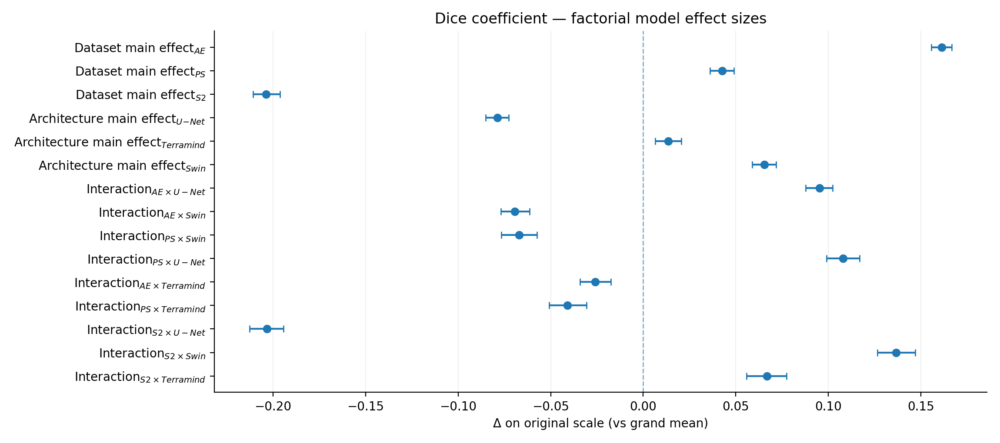
| dataset | arch | mean | hdi_lo | hdi_hi |
|---|---|---|---|---|
| AE | U-Net | 0.8875 | 0.8792 | 0.8952 |
| AE | Swin | 0.8669 | 0.8578 | 0.8764 |
| AE | Terramind | 0.8586 | 0.8489 | 0.8682 |
| PS | U-Net | 0.7816 | 0.7680 | 0.7942 |
| PS | Swin | 0.7506 | 0.7357 | 0.7656 |
| PS | Terramind | 0.7249 | 0.7096 | 0.7405 |
| S2 | U-Net | 0.2239 | 0.2106 | 0.2380 |
| S2 | Swin | 0.7079 | 0.6923 | 0.7252 |
| S2 | Terramind | 0.5864 | 0.5666 | 0.6051 |
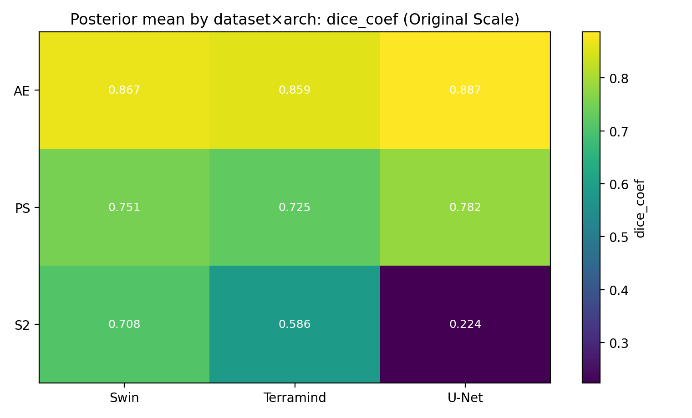
| dataset | contrast | Δ_mean | Δ_lo | Δ_hi | Pr(Δ>ROPE) | Pr(|Δ|<ROPE) | Pr(Δ<-ROPE) | Pr(>0) |
|---|---|---|---|---|---|---|---|---|
| AE | Swin − U-Net | -0.02055 | -0.03251 | -0.008257 | 0.0001250 | 0.009500 | 0.9904 | 0.001125 |
| AE | Terramind − U-Net | -0.02885 | -0.04156 | -0.01640 | 0 | 0.0003750 | 0.9996 | 0.0001250 |
| PS | Swin − U-Net | -0.03096 | -0.05125 | -0.01109 | 0 | 0.01613 | 0.9839 | 0.0008750 |
| PS | Terramind − U-Net | -0.05670 | -0.07706 | -0.03557 | 0 | 0 | 1.000 | 0 |
| S2 | Swin − U-Net | 0.4840 | 0.4633 | 0.5058 | 1.000 | 0 | 0 | 1.000 |
| S2 | Terramind − U-Net | 0.3624 | 0.3395 | 0.3864 | 1.000 | 0 | 0 | 1.000 |
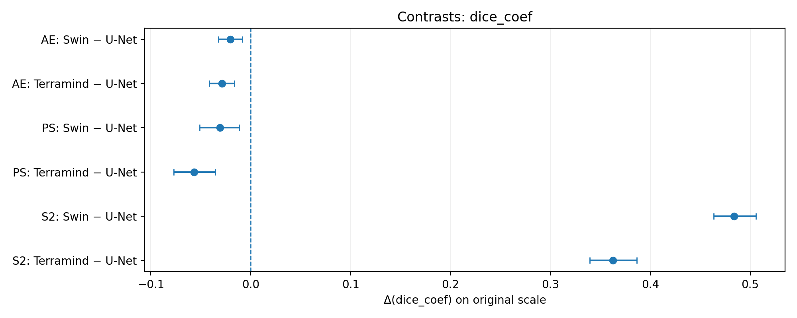
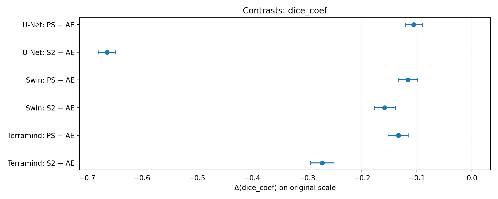
| arch | contrast | Δ_mean | Δ_lo | Δ_hi | Pr(Δ>ROPE) | Pr(|Δ|<ROPE) | Pr(Δ<-ROPE) | Pr(>0) |
|---|---|---|---|---|---|---|---|---|
| U-Net | PS − AE | -0.1059 | -0.1208 | -0.08959 | 0 | 0 | 1.000 | 0 |
| U-Net | S2 − AE | -0.6635 | -0.6797 | -0.6479 | 0 | 0 | 1.000 | 0 |
| Swin | PS − AE | -0.1163 | -0.1341 | -0.09852 | 0 | 0 | 1.000 | 0 |
| Swin | S2 − AE | -0.1590 | -0.1769 | -0.1392 | 0 | 0 | 1.000 | 0 |
| Terramind | PS − AE | -0.1337 | -0.1527 | -0.1159 | 0 | 0 | 1.000 | 0 |
| Terramind | S2 − AE | -0.2723 | -0.2940 | -0.2509 | 0 | 0 | 1.000 | 0 |
| scope | contrast | mean_original | hdi_lo_original | hdi_hi_original | Pr(Δ>ROPE) | Pr(|Δ|<ROPE) | Pr(Δ<-ROPE) | Pr(>0) |
|---|---|---|---|---|---|---|---|---|
| Overall (avg over datasets) | Swin − U-Net | 0.1442 | 0.1337 | 0.1550 | 1.000 | 0 | 0 | 1.000 |
| Overall (avg over datasets) | Terramind − U-Net | 0.09229 | 0.08112 | 0.1038 | 1.000 | 0 | 0 | 1.000 |
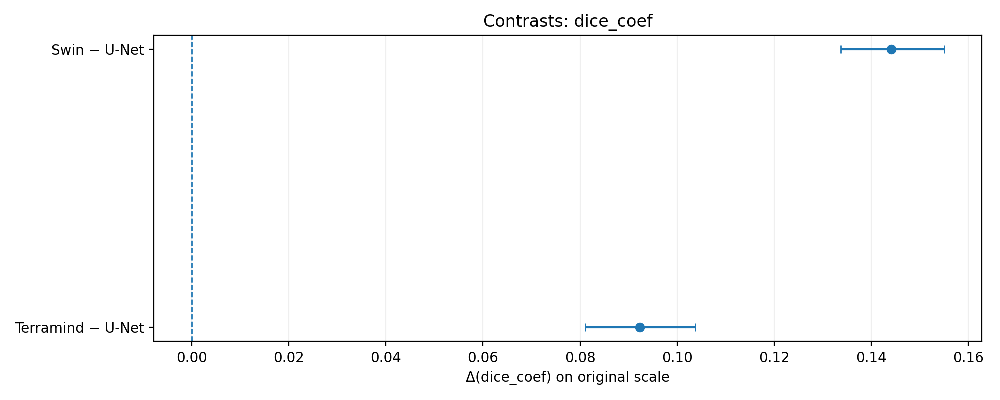
| scope | contrast | mean_original | hdi_lo_original | hdi_hi_original | Pr(Δ>ROPE) | Pr(|Δ|<ROPE) | Pr(Δ<-ROPE) | Pr(>0) |
|---|---|---|---|---|---|---|---|---|
| Overall (avg over arch) | PS − AE | -0.1186 | -0.1283 | -0.1086 | 0 | 0 | 1.000 | 0 |
| Overall (avg over arch) | S2 − AE | -0.3649 | -0.3766 | -0.3543 | 0 | 0 | 1.000 | 0 |
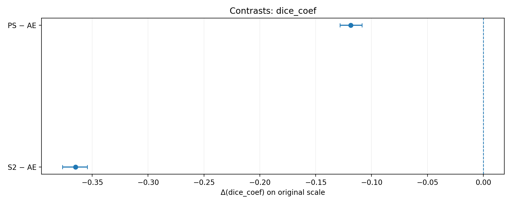
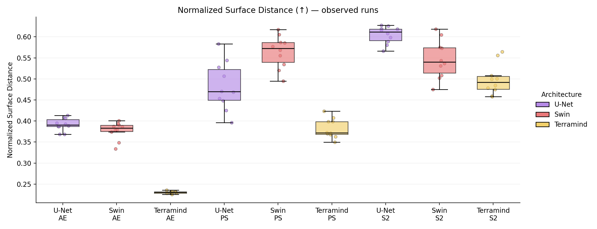
Modelled on logit scale; reporting mu_orig on original scale. Hierarchical variance improves regularization.
| group | mean | sd | hdi_2.5% | hdi_97.5% | Pr(rank=1) | Pr(rank=2) | Pr(rank=3) | Pr(rank=4) | Pr(rank=5) | Pr(rank=6) | Pr(rank=7) | Pr(rank=8) | Pr(rank=9) | E[rank] | Pr(best) | Pr(best)_prior | sigma_mean | sigma_sd | sigma_hdi_lo | sigma_hdi_hi | Pr(Δ>ROPE) | Pr(|Δ|<ROPE) | Pr(Δ<-ROPE) |
|---|---|---|---|---|---|---|---|---|---|---|---|---|---|---|---|---|---|---|---|---|---|---|---|
| U-Net | S2 | 0.6040 | 0.008000 | 0.5900 | 0.6200 | 0.9938 | 0.006000 | 0.0002500 | 0 | 0 | 0 | 0 | 0 | 0 | 1.006 | 0.9938 | 0.1020 | 0.09700 | 0.02600 | 0.05600 | 0.1470 | NaN | NaN | NaN |
| Swin U-Net | PS | 0.5640 | 0.01300 | 0.5370 | 0.5900 | 0.005500 | 0.8129 | 0.1807 | 0.0008750 | 0 | 0 | 0 | 0 | 0 | 2.177 | 0.005500 | 0.1080 | 0.1670 | 0.04100 | 0.1000 | 0.2490 | 0.0003750 | 0.02813 | 0.9715 |
| Swin U-Net | S2 | 0.5460 | 0.01500 | 0.5140 | 0.5760 | 0.0007500 | 0.1809 | 0.8037 | 0.01350 | 0.001125 | 0 | 0 | 0 | 0 | 2.833 | 0.0007500 | 0.1100 | 0.1930 | 0.04500 | 0.1160 | 0.2820 | 0.0006250 | 0.003125 | 0.9962 |
| Terramind | S2 | 0.4980 | 0.01300 | 0.4710 | 0.5210 | 0 | 0.0002500 | 0.009625 | 0.7635 | 0.2266 | 0 | 0 | 0 | 0 | 4.216 | 0 | 0.1240 | 0.1580 | 0.03800 | 0.09400 | 0.2300 | 0 | 0 | 1.000 |
| U-Net | PS | 0.4820 | 0.01800 | 0.4460 | 0.5190 | 0 | 0 | 0.005625 | 0.2221 | 0.7721 | 0.0001250 | 0 | 0 | 0 | 4.767 | 0 | 0.1180 | 0.2310 | 0.05100 | 0.1450 | 0.3330 | 0 | 0 | 1.000 |
| U-Net | AE | 0.3920 | 0.006000 | 0.3800 | 0.4030 | 0 | 0 | 0 | 0 | 0 | 0.7906 | 0.1864 | 0.02300 | 0 | 6.232 | 0 | 0.1060 | 0.07400 | 0.02100 | 0.04200 | 0.1160 | 0 | 0 | 1.000 |
| Terramind | PS | 0.3820 | 0.008000 | 0.3660 | 0.3990 | 0 | 0 | 0 | 0 | 0.0001250 | 0.1630 | 0.5264 | 0.3105 | 0 | 7.147 | 0 | 0.09000 | 0.1100 | 0.02900 | 0.06200 | 0.1660 | 0 | 0 | 1.000 |
| Swin U-Net | AE | 0.3770 | 0.008000 | 0.3620 | 0.3920 | 0 | 0 | 0 | 0 | 0 | 0.04625 | 0.2873 | 0.6665 | 0 | 7.620 | 0 | 0.1260 | 0.1010 | 0.02600 | 0.06000 | 0.1520 | 0 | 0 | 1.000 |
| Terramind | AE | 0.2300 | 0.001000 | 0.2280 | 0.2330 | 0 | 0 | 0 | 0 | 0 | 0 | 0 | 0 | 1.000 | 9.000 | 0 | 0.1160 | 0.01900 | 0.005000 | 0.01000 | 0.02900 | 0 | 0 | 1.000 |
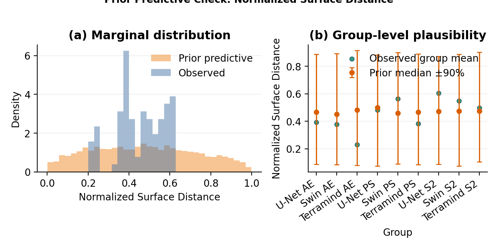
Check if priors are reasonable on original scale.
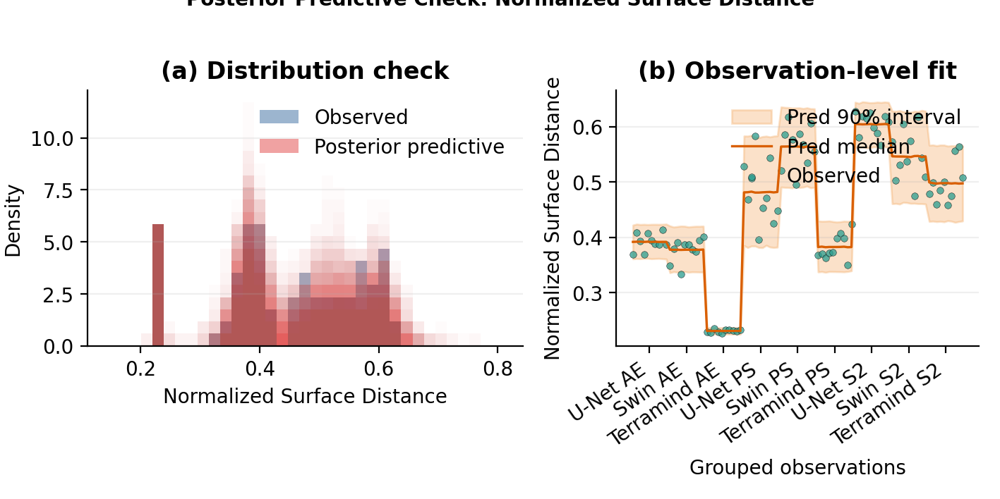
Red overlay shows model predictions; blue shows observed data.
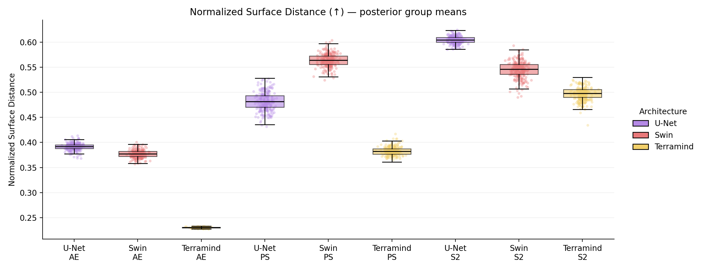
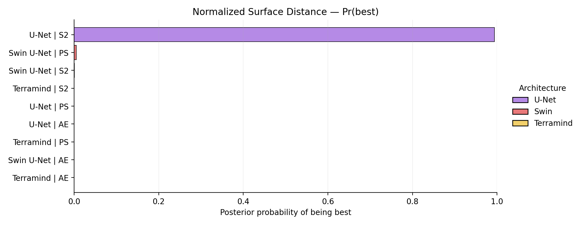
For each adjacent pair in the expected-rank order, we report the probability that the higher-ranked group is (a) better, (b) meaningfully better (exceeds ROPE), or (c) practically tied (inside ROPE). ROPE is applied on the model's transformed scale for consistency.
| rank | group | next_rank_group | Δ_mean | Δ_lo | Δ_hi | Pr(better) | Pr(Δ>ROPE) | Pr(|Δ|<ROPE) | Pr(Δ<-ROPE) |
|---|---|---|---|---|---|---|---|---|---|
| 1 | U-Net | S2 | Swin U-Net | PS | 0.04082 | 0.01144 | 0.07195 | 0.9942 | 0.9715 | 0.02813 | 0.0003750 |
| 2 | Swin U-Net | PS | Swin U-Net | S2 | 0.01786 | -0.02341 | 0.05844 | 0.8184 | 0.6074 | 0.3232 | 0.06938 |
| 3 | Swin U-Net | S2 | Terramind | S2 | 0.04810 | 0.009599 | 0.08799 | 0.9896 | 0.9623 | 0.03587 | 0.001875 |
| 4 | Terramind | S2 | U-Net | PS | 0.01588 | -0.02755 | 0.06161 | 0.7725 | 0.5693 | 0.3326 | 0.09813 |
| 5 | U-Net | PS | U-Net | AE | 0.09014 | 0.05037 | 0.1274 | 1.000 | 1.000 | 0 | 0 |
| 6 | U-Net | AE | Terramind | PS | 0.009338 | -0.01025 | 0.03031 | 0.8277 | 0.3947 | 0.5833 | 0.02200 |
| 7 | Terramind | PS | Swin U-Net | AE | 0.005010 | -0.01802 | 0.02641 | 0.6804 | 0.2689 | 0.6637 | 0.06738 |
| 8 | Swin U-Net | AE | Terramind | AE | 0.1469 | 0.1325 | 0.1632 | 1.000 | 1.000 | 0 | 0 |
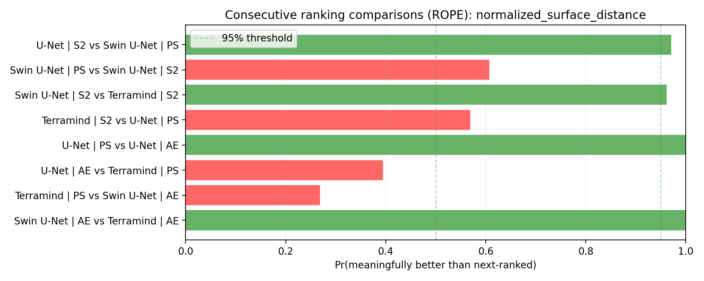
For each adjacent pair in the expected-rank order, we report the probability that the higher-ranked group is (a) better, (b) meaningfully better (exceeds ROPE), or (c) practically tied (inside ROPE). ROPE is applied on the model's transformed scale for consistency.
| rank | group | next_rank_group | Δ_mean | Δ_lo | Δ_hi | Pr(better) | Pr(Δ>ROPE) | Pr(|Δ|<ROPE) | Pr(Δ<-ROPE) |
|---|---|---|---|---|---|---|---|---|---|
| 1 | U-Net | S2 | Swin U-Net | PS | 0.04082 | 0.01144 | 0.07195 | 0.9942 | 0.9715 | 0.02813 | 0.0003750 |
| 2 | Swin U-Net | PS | Swin U-Net | S2 | 0.01786 | -0.02341 | 0.05844 | 0.8184 | 0.6074 | 0.3232 | 0.06938 |
| 3 | Swin U-Net | S2 | Terramind | S2 | 0.04810 | 0.009599 | 0.08799 | 0.9896 | 0.9623 | 0.03587 | 0.001875 |
| 4 | Terramind | S2 | U-Net | PS | 0.01588 | -0.02755 | 0.06161 | 0.7725 | 0.5693 | 0.3326 | 0.09813 |
| 5 | U-Net | PS | U-Net | AE | 0.09014 | 0.05037 | 0.1274 | 1.000 | 1.000 | 0 | 0 |
| 6 | U-Net | AE | Terramind | PS | 0.009338 | -0.01025 | 0.03031 | 0.8277 | 0.3947 | 0.5833 | 0.02200 |
| 7 | Terramind | PS | Swin U-Net | AE | 0.005010 | -0.01802 | 0.02641 | 0.6804 | 0.2689 | 0.6637 | 0.06738 |
| 8 | Swin U-Net | AE | Terramind | AE | 0.1469 | 0.1325 | 0.1632 | 1.000 | 1.000 | 0 | 0 |
All effects shown on natural, interpretable scales. Multiple BF bandwidths show robustness of evidence. ROPE probabilities add a practical-significance view (meaningful vs negligible effects).
| param | Pr(>0) | Pr(Δ>ROPE) | Pr(|Δ|<ROPE) | Pr(Δ<-ROPE) | OR | Δp_mean | Δp_lo | Δp_hi | baseline |
|---|---|---|---|---|---|---|---|---|---|
| beta_dataset[AE] | 0 | 0 | 0 | 1.000 | 0.5995 | -0.1199 | -0.1297 | -0.1113 | 0.4531 |
| beta_dataset[PS] | 1.000 | 0.9961 | 0.003875 | 0 | 1.112 | 0.02302 | 0.01372 | 0.03313 | 0.4531 |
| beta_arch[U-Net] | 1.000 | 1.000 | 0 | 0 | 1.191 | 0.03965 | 0.02974 | 0.04944 | 0.4531 |
| beta_arch[Swin] | 1.000 | 1.000 | 0 | 0 | 1.205 | 0.04328 | 0.03380 | 0.05292 | 0.4531 |
| beta_interaction[AE×U-Net] | 0.9998 | 0.9565 | 0.04350 | 0 | 1.106 | 0.01871 | 0.004718 | 0.03171 | 0.4531 |
| beta_interaction[AE×Swin] | 0.8371 | 0.2255 | 0.7692 | 0.005250 | 1.029 | 0.0009213 | -0.01263 | 0.01396 | 0.4531 |
| beta_interaction[PS×U-Net] | 0 | 0 | 0.001000 | 0.9990 | 0.8628 | -0.03365 | -0.04757 | -0.01993 | 0.4531 |
| beta_interaction[PS×Swin] | 1.000 | 1.000 | 0 | 0 | 1.187 | 0.04512 | 0.03130 | 0.05945 | 0.4531 |
| beta_dataset[S2] | 1.000 | 1.000 | 0 | 0 | 1.501 | 0.09690 | 0.08712 | 0.1064 | 0.4531 |
| beta_arch[Terramind] | 0 | 0 | 0 | 1.000 | 0.6970 | -0.08292 | -0.09193 | -0.07290 | 0.4531 |
| beta_interaction[AE×Terramind] | 0 | 0 | 0.004000 | 0.9960 | 0.8799 | -0.01963 | -0.03141 | -0.007258 | 0.4531 |
| beta_interaction[PS×Terramind] | 0.2131 | 0.006000 | 0.8169 | 0.1771 | 0.9775 | -0.01147 | -0.02477 | 0.001698 | 0.4531 |
| beta_interaction[S2×U-Net] | 0.9490 | 0.4741 | 0.5254 | 0.0005000 | 1.050 | 0.01494 | 0.001127 | 0.02880 | 0.4531 |
| beta_interaction[S2×Swin] | 0 | 0 | 0 | 1.000 | 0.8196 | -0.04604 | -0.05942 | -0.03180 | 0.4531 |
| beta_interaction[S2×Terramind] | 1.000 | 1.000 | 0 | 0 | 1.164 | 0.03110 | 0.01732 | 0.04471 | 0.4531 |
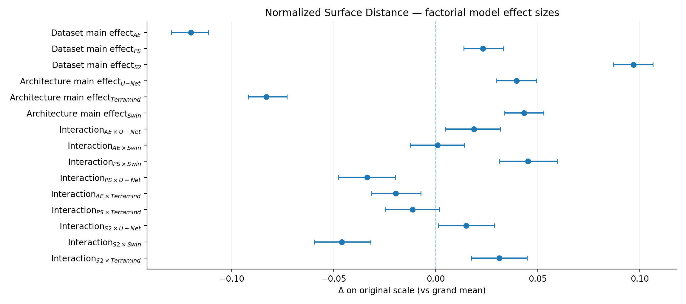
| dataset | arch | mean | hdi_lo | hdi_hi |
|---|---|---|---|---|
| AE | U-Net | 0.3915 | 0.3712 | 0.4110 |
| AE | Swin | 0.3774 | 0.3565 | 0.3970 |
| AE | Terramind | 0.2306 | 0.2151 | 0.2459 |
| PS | U-Net | 0.4821 | 0.4608 | 0.5032 |
| PS | Swin | 0.5645 | 0.5440 | 0.5857 |
| PS | Terramind | 0.3817 | 0.3615 | 0.4023 |
| S2 | U-Net | 0.6046 | 0.5835 | 0.6253 |
| S2 | Swin | 0.5473 | 0.5259 | 0.5677 |
| S2 | Terramind | 0.4982 | 0.4776 | 0.5210 |
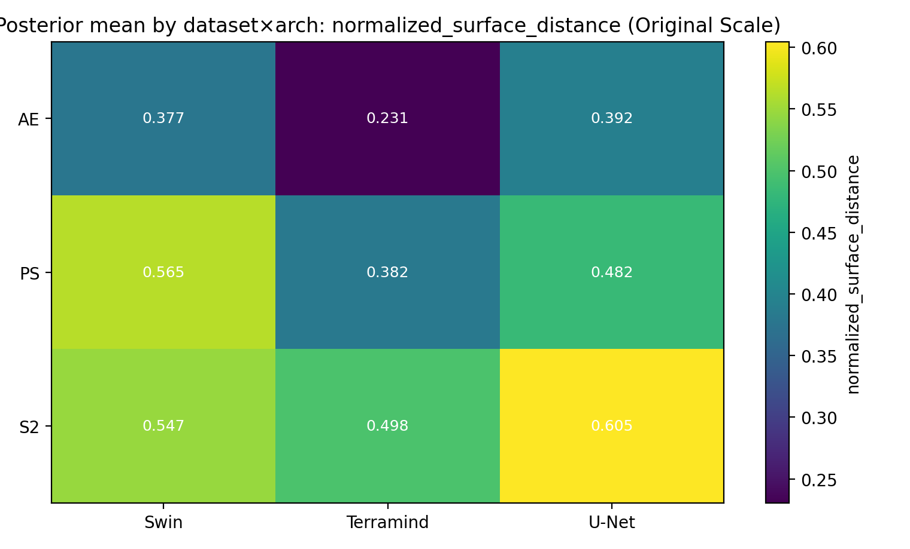
| dataset | contrast | Δ_mean | Δ_lo | Δ_hi | Pr(Δ>ROPE) | Pr(|Δ|<ROPE) | Pr(Δ<-ROPE) | Pr(>0) |
|---|---|---|---|---|---|---|---|---|
| AE | Swin − U-Net | -0.01416 | -0.04371 | 0.01439 | 0.03825 | 0.3980 | 0.5637 | 0.1643 |
| AE | Terramind − U-Net | -0.1609 | -0.1860 | -0.1353 | 0 | 0 | 1.000 | 0 |
| PS | Swin − U-Net | 0.08240 | 0.05372 | 0.1134 | 1.000 | 0 | 0 | 1.000 |
| PS | Terramind − U-Net | -0.1004 | -0.1298 | -0.07144 | 0 | 0 | 1.000 | 0 |
| S2 | Swin − U-Net | -0.05736 | -0.08748 | -0.02791 | 0 | 0.001250 | 0.9988 | 0 |
| S2 | Terramind − U-Net | -0.1064 | -0.1364 | -0.07535 | 0 | 0 | 1.000 | 0 |
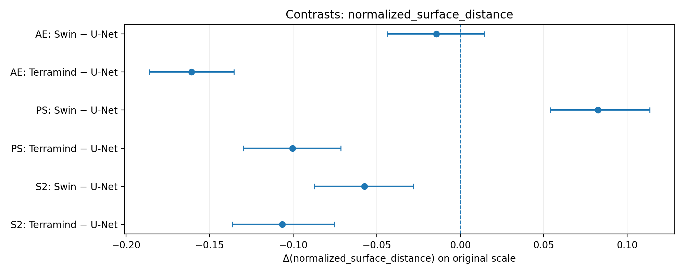
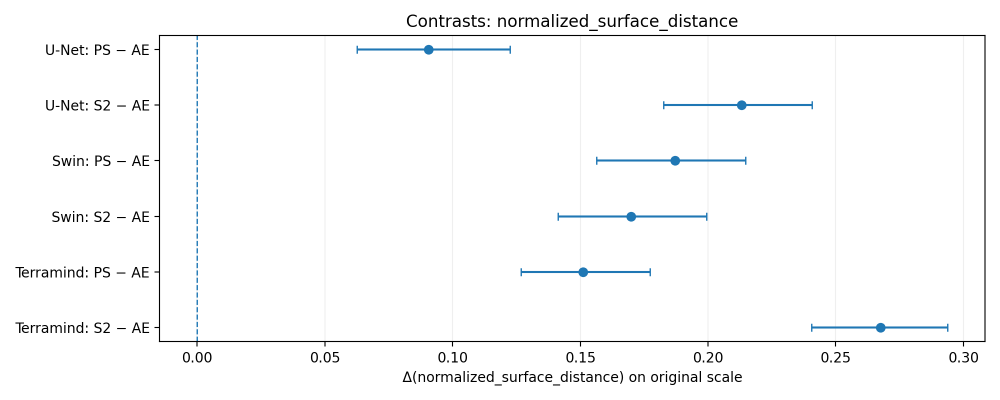
| arch | contrast | Δ_mean | Δ_lo | Δ_hi | Pr(Δ>ROPE) | Pr(|Δ|<ROPE) | Pr(Δ<-ROPE) | Pr(>0) |
|---|---|---|---|---|---|---|---|---|
| U-Net | PS − AE | 0.09059 | 0.06252 | 0.1225 | 1.000 | 0 | 0 | 1.000 |
| U-Net | S2 − AE | 0.2131 | 0.1826 | 0.2407 | 1.000 | 0 | 0 | 1.000 |
| Swin | PS − AE | 0.1871 | 0.1564 | 0.2146 | 1.000 | 0 | 0 | 1.000 |
| Swin | S2 − AE | 0.1699 | 0.1412 | 0.1994 | 1.000 | 0 | 0 | 1.000 |
| Terramind | PS − AE | 0.1511 | 0.1268 | 0.1774 | 1.000 | 0 | 0 | 1.000 |
| Terramind | S2 − AE | 0.2676 | 0.2405 | 0.2937 | 1.000 | 0 | 0 | 1.000 |
| scope | contrast | mean_original | hdi_lo_original | hdi_hi_original | Pr(Δ>ROPE) | Pr(|Δ|<ROPE) | Pr(Δ<-ROPE) | Pr(>0) |
|---|---|---|---|---|---|---|---|---|
| Overall (avg over datasets) | Swin − U-Net | 0.003628 | -0.01275 | 0.02070 | 0.1420 | 0.8211 | 0.03687 | 0.6305 |
| Overall (avg over datasets) | Terramind − U-Net | -0.1226 | -0.1394 | -0.1060 | 0 | 0 | 1.000 | 0 |
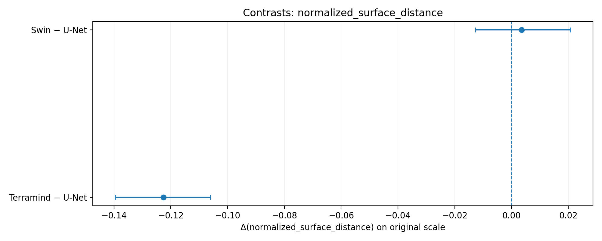
| scope | contrast | mean_original | hdi_lo_original | hdi_hi_original | Pr(Δ>ROPE) | Pr(|Δ|<ROPE) | Pr(Δ<-ROPE) | Pr(>0) |
|---|---|---|---|---|---|---|---|---|
| Overall (avg over arch) | PS − AE | 0.1429 | 0.1264 | 0.1587 | 1.000 | 0 | 0 | 1.000 |
| Overall (avg over arch) | S2 − AE | 0.2168 | 0.2008 | 0.2330 | 1.000 | 0 | 0 | 1.000 |
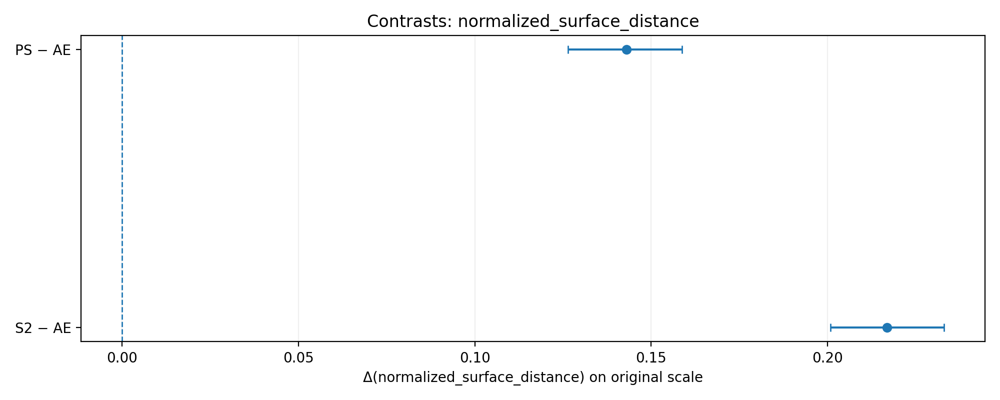
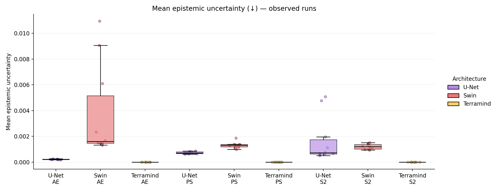
Modelled on log scale; reporting mu_orig on original scale. Hierarchical variance improves regularization.
| group | mean | sd | hdi_2.5% | hdi_97.5% | Pr(rank=1) | Pr(rank=2) | Pr(rank=3) | Pr(rank=4) | Pr(rank=5) | Pr(rank=6) | Pr(rank=7) | Pr(rank=8) | Pr(rank=9) | E[rank] | Pr(best) | Pr(best)_prior | sigma_mean | sigma_sd | sigma_hdi_lo | sigma_hdi_hi | Pr(Δ>ROPE) | Pr(|Δ|<ROPE) | Pr(Δ<-ROPE) |
|---|---|---|---|---|---|---|---|---|---|---|---|---|---|---|---|---|---|---|---|---|---|---|---|
| Terramind | PS | 0 | 0 | 0 | 0 | 0.3756 | 0.3744 | 0.2500 | 0 | 0 | 0 | 0 | 0 | 0 | 1.874 | 0.3756 | 0.09800 | 0.9830 | 1.700 | 0 | 3.927 | NaN | NaN | NaN |
| Terramind | AE | 0 | 0 | 0 | 0 | 0.2500 | 0.5000 | 0.2500 | 0 | 0 | 0 | 0 | 0 | 0 | 2.000 | 0.2500 | 0.1140 | 2.115 | 2.125 | 0 | 4.527 | 0.2500 | 0.5000 | 0.2500 |
| Terramind | S2 | 0 | 0 | 0 | 0 | 0.3744 | 0.1256 | 0.5000 | 0 | 0 | 0 | 0 | 0 | 0 | 2.126 | 0.3744 | 0.1040 | 0.2580 | 0.4460 | 0 | 1.030 | 0.2500 | 0.5000 | 0.2500 |
| U-Net | AE | 0 | 0 | 0 | 0 | 0 | 0 | 0 | 1.000 | 0 | 0 | 0 | 0 | 0 | 4.000 | 0 | 0.1100 | 0.1390 | 0.01700 | 0.1200 | 0.1670 | 0 | 0 | 1.000 |
| U-Net | PS | 0.001000 | 0 | 0.001000 | 0.001000 | 0 | 0 | 0 | 0 | 1.000 | 0 | 0 | 0 | 0 | 5.000 | 0 | 0.1180 | 0.1240 | 0.003000 | 0.1200 | 0.1280 | 0 | 0 | 1.000 |
| Swin U-Net | S2 | 0.001000 | 0 | 0.001000 | 0.001000 | 0 | 0 | 0 | 0 | 0 | 0.5000 | 0.5000 | 0 | 0 | 6.500 | 0 | 0.1180 | 0.1990 | 0.02900 | 0.1690 | 0.2310 | 0 | 0 | 1.000 |
| U-Net | S2 | 0.001000 | 0 | 0.001000 | 0.002000 | 0 | 0 | 0 | 0 | 0 | 0.5000 | 0.2500 | 0.2500 | 0 | 6.750 | 0 | 0.1000 | 0.7470 | 0.1180 | 0.6480 | 0.9400 | 0 | 0 | 1.000 |
| Swin U-Net | PS | 0.001000 | 0 | 0.001000 | 0.001000 | 0 | 0 | 0 | 0 | 0 | 0 | 0.2500 | 0.7500 | 0 | 7.750 | 0 | 0.1100 | 0.1860 | 0.01200 | 0.1650 | 0.1950 | 0 | 0 | 1.000 |
| Swin U-Net | AE | 0.003000 | 0.001000 | 0.002000 | 0.003000 | 0 | 0 | 0 | 0 | 0 | 0 | 0 | 0 | 1.000 | 9.000 | 0 | 0.1280 | 0.8840 | 0.08700 | 0.7810 | 0.9770 | 0 | 0 | 1.000 |
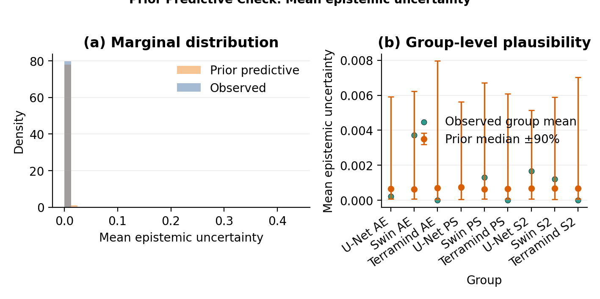
Check if priors are reasonable on original scale.
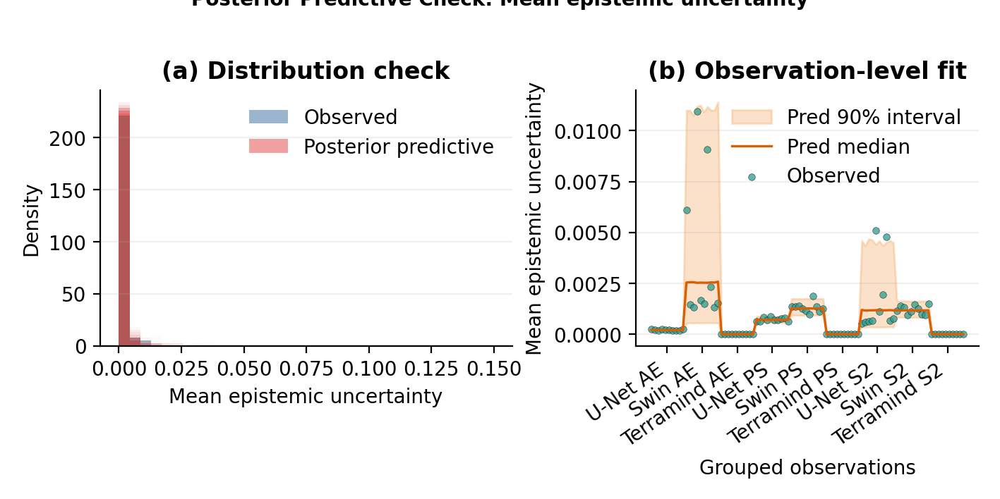
Red overlay shows model predictions; blue shows observed data.
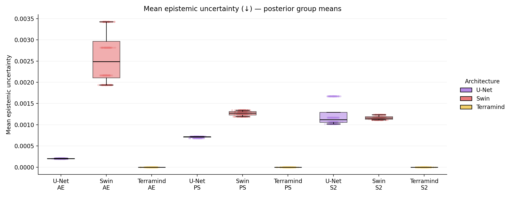
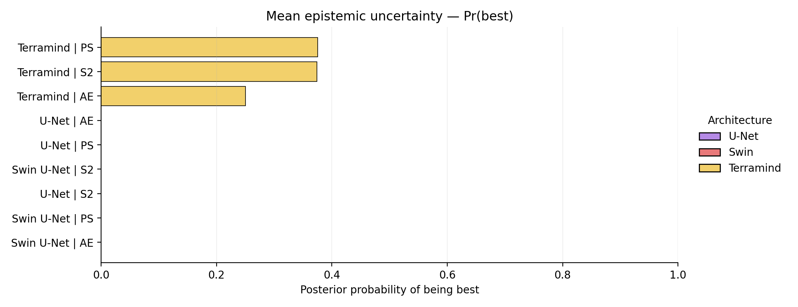
For each adjacent pair in the expected-rank order, we report the probability that the higher-ranked group is (a) better, (b) meaningfully better (exceeds ROPE), or (c) practically tied (inside ROPE). ROPE is applied on the model's transformed scale for consistency.
| rank | group | next_rank_group | Δ_mean | Δ_lo | Δ_hi | Pr(better) | Pr(Δ>ROPE) | Pr(|Δ|<ROPE) | Pr(Δ<-ROPE) |
|---|---|---|---|---|---|---|---|---|---|
| 1 | Terramind | PS | Terramind | AE | 3.84e-11 | -1.58e-11 | 1.69e-10 | 0.5000 | 0.2500 | 0.5000 | 0.2500 |
| 2 | Terramind | AE | Terramind | S2 | -4.88e-11 | -1.69e-10 | 3.50e-13 | 0.5000 | 0.2500 | 0.2500 | 0.5000 |
| 3 | Terramind | S2 | U-Net | AE | 0.0002030 | 0.0001955 | 0.0002104 | 1.000 | 1.000 | 0 | 0 |
| 4 | U-Net | AE | U-Net | PS | 0.0005079 | 0.0004888 | 0.0005156 | 1.000 | 1.000 | 0 | 0 |
| 5 | U-Net | PS | Swin U-Net | S2 | 0.0004556 | 0.0004207 | 0.0005165 | 1.000 | 1.000 | 0 | 0 |
| 6 | Swin U-Net | S2 | U-Net | S2 | 6.52e-05 | -0.0001106 | 0.0004364 | 0.5000 | 0.2500 | 0.2500 | 0.5000 |
| 7 | U-Net | S2 | Swin U-Net | PS | 3.97e-05 | -0.0004245 | 0.0002873 | 0.7500 | 0.5000 | 0.2500 | 0.2500 |
| 8 | Swin U-Net | PS | Swin U-Net | AE | 0.001315 | 0.0006925 | 0.002119 | 1.000 | 1.000 | 0 | 0 |
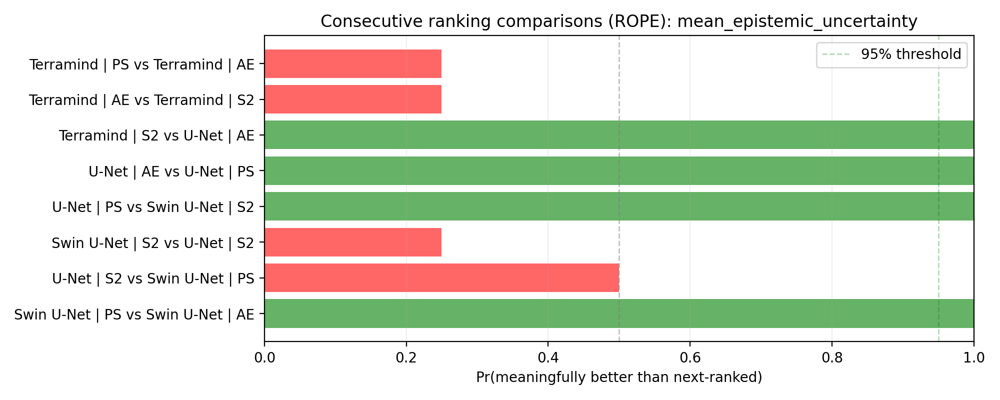
For each adjacent pair in the expected-rank order, we report the probability that the higher-ranked group is (a) better, (b) meaningfully better (exceeds ROPE), or (c) practically tied (inside ROPE). ROPE is applied on the model's transformed scale for consistency.
| rank | group | next_rank_group | Δ_mean | Δ_lo | Δ_hi | Pr(better) | Pr(Δ>ROPE) | Pr(|Δ|<ROPE) | Pr(Δ<-ROPE) |
|---|---|---|---|---|---|---|---|---|---|
| 1 | Terramind | PS | Terramind | AE | 3.84e-11 | -1.58e-11 | 1.69e-10 | 0.5000 | 0.2500 | 0.5000 | 0.2500 |
| 2 | Terramind | AE | Terramind | S2 | -4.88e-11 | -1.69e-10 | 3.50e-13 | 0.5000 | 0.2500 | 0.2500 | 0.5000 |
| 3 | Terramind | S2 | U-Net | AE | 0.0002030 | 0.0001955 | 0.0002104 | 1.000 | 1.000 | 0 | 0 |
| 4 | U-Net | AE | U-Net | PS | 0.0005079 | 0.0004888 | 0.0005156 | 1.000 | 1.000 | 0 | 0 |
| 5 | U-Net | PS | Swin U-Net | S2 | 0.0004556 | 0.0004207 | 0.0005165 | 1.000 | 1.000 | 0 | 0 |
| 6 | Swin U-Net | S2 | U-Net | S2 | 6.52e-05 | -0.0001106 | 0.0004364 | 0.5000 | 0.2500 | 0.2500 | 0.5000 |
| 7 | U-Net | S2 | Swin U-Net | PS | 3.97e-05 | -0.0004245 | 0.0002873 | 0.7500 | 0.5000 | 0.2500 | 0.2500 |
| 8 | Swin U-Net | PS | Swin U-Net | AE | 0.001315 | 0.0006925 | 0.002119 | 1.000 | 1.000 | 0 | 0 |
All effects shown on natural, interpretable scales. Multiple BF bandwidths show robustness of evidence. ROPE probabilities add a practical-significance view (meaningful vs negligible effects).
| param | Pr(>0) | Pr(Δ>ROPE) | Pr(|Δ|<ROPE) | Pr(Δ<-ROPE) | Abs_Δ_mean | Abs_Δ_lo | Abs_Δ_hi | %_change | baseline |
|---|---|---|---|---|---|---|---|---|---|
| beta_dataset[AE] | 0.006250 | 0.001625 | 0.03938 | 0.9590 | 0.0001117 | -4.29e-05 | 0.0002701 | -14.45 | 0.0007555 |
| beta_dataset[PS] | 0.6050 | 0.3083 | 0.5404 | 0.1514 | -0.0001051 | -0.0002196 | 2.32e-05 | 1.903 | 0.0007555 |
| beta_arch[U-Net] | 1.000 | 1.000 | 0 | 0 | -8.87e-05 | -0.0002050 | 3.00e-05 | 55555.04 | 0.0007555 |
| beta_arch[Swin] | 1.000 | 1.000 | 0 | 0 | 0.0008443 | 0.0006693 | 0.001031 | 154407.11 | 0.0007555 |
| beta_interaction[AE×U-Net] | 0 | 0 | 0 | 1.000 | -0.0005636 | -0.0007351 | -0.0003951 | -53.63 | 0.0007555 |
| beta_interaction[AE×Swin] | 1.000 | 1.000 | 0 | 0 | 0.0006753 | 0.0003919 | 0.0009876 | 85.49 | 0.0007555 |
| beta_interaction[PS×U-Net] | 0.9902 | 0.9656 | 0.03250 | 0.001875 | 0.0001229 | -1.82e-05 | 0.0002784 | 23.98 | 0.0007555 |
| beta_interaction[PS×Swin] | 0.01775 | 0.004500 | 0.05237 | 0.9431 | -0.0002280 | -0.0004514 | -4.93e-06 | -17.35 | 0.0007555 |
| beta_dataset[S2] | 0.9864 | 0.9249 | 0.07287 | 0.002250 | -6.68e-06 | -0.0001332 | 0.0001192 | 15.42 | 0.0007555 |
| beta_arch[Terramind] | 0 | 0 | 0 | 1.000 | -0.0007555 | -0.0008522 | -0.0006612 | -100.00 | 0.0007555 |
| beta_interaction[AE×Terramind] | 0.9594 | 0.8845 | 0.1040 | 0.01150 | -0.0001117 | -0.0002701 | 4.29e-05 | 17.68 | 0.0007555 |
| beta_interaction[PS×Terramind] | 0.4261 | 0.2285 | 0.4174 | 0.3541 | 0.0001051 | -2.32e-05 | 0.0002196 | -1.235 | 0.0007555 |
| beta_interaction[S2×U-Net] | 1.000 | 1.000 | 0 | 0 | 0.0004407 | 0.0002725 | 0.0006125 | 76.00 | 0.0007555 |
| beta_interaction[S2×Swin] | 0 | 0 | 0.0001250 | 0.9999 | -0.0004474 | -0.0006752 | -0.0002392 | -33.97 | 0.0007555 |
| beta_interaction[S2×Terramind] | 0.05688 | 0.01800 | 0.1280 | 0.8540 | 6.68e-06 | -0.0001192 | 0.0001332 | -12.90 | 0.0007555 |
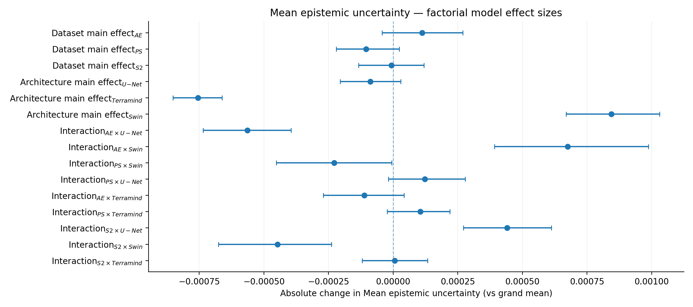
| dataset | arch | mean | hdi_lo | hdi_hi |
|---|---|---|---|---|
| AE | U-Net | 0.0002150 | 0.0001577 | 0.0002712 |
| AE | Swin | 0.002387 | 0.001782 | 0.003058 |
| AE | Terramind | 1.15e-12 | 8.45e-13 | 1.47e-12 |
| PS | U-Net | 0.0006847 | 0.0005106 | 0.0008688 |
| PS | Swin | 0.001267 | 0.0009549 | 0.001624 |
| PS | Terramind | 1.15e-12 | 8.43e-13 | 1.47e-12 |
| S2 | U-Net | 0.001101 | 0.0008319 | 0.001409 |
| S2 | Swin | 0.001146 | 0.0008591 | 0.001439 |
| S2 | Terramind | 1.15e-12 | 8.43e-13 | 1.47e-12 |
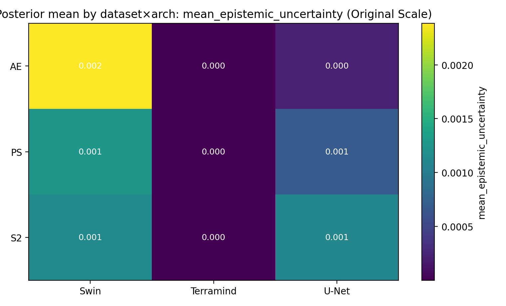
| dataset | contrast | Δ_mean | Δ_lo | Δ_hi | Pr(Δ>ROPE) | Pr(|Δ|<ROPE) | Pr(Δ<-ROPE) | Pr(>0) |
|---|---|---|---|---|---|---|---|---|
| AE | Swin − U-Net | 0.002172 | 0.001588 | 0.002866 | 1.000 | 0 | 0 | 1.000 |
| AE | Terramind − U-Net | -0.0002150 | -0.0002712 | -0.0001577 | 0 | 0 | 1.000 | 0 |
| PS | Swin − U-Net | 0.0005821 | 0.0002125 | 0.0009664 | 0.9991 | 0.0007500 | 0.0001250 | 0.9996 |
| PS | Terramind − U-Net | -0.0006847 | -0.0008688 | -0.0005106 | 0 | 0 | 1.000 | 0 |
| S2 | Swin − U-Net | 4.50e-05 | -0.0003911 | 0.0004434 | 0.4774 | 0.2062 | 0.3164 | 0.5861 |
| S2 | Terramind − U-Net | -0.001101 | -0.001409 | -0.0008319 | 0 | 0 | 1.000 | 0 |
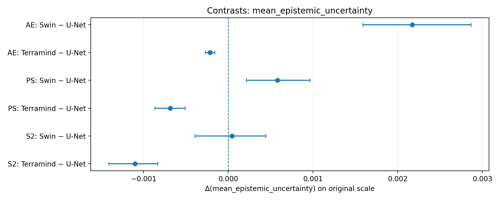
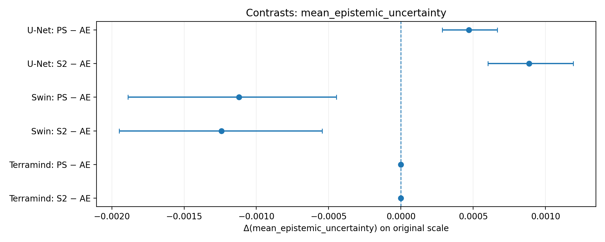
| arch | contrast | Δ_mean | Δ_lo | Δ_hi | Pr(Δ>ROPE) | Pr(|Δ|<ROPE) | Pr(Δ<-ROPE) | Pr(>0) |
|---|---|---|---|---|---|---|---|---|
| U-Net | PS − AE | 0.0004697 | 0.0002850 | 0.0006667 | 1.000 | 0 | 0 | 1.000 |
| U-Net | S2 − AE | 0.0008859 | 0.0006028 | 0.001192 | 1.000 | 0 | 0 | 1.000 |
| Swin | PS − AE | -0.001120 | -0.001889 | -0.0004458 | 0 | 0.001375 | 0.9986 | 0.0003750 |
| Swin | S2 − AE | -0.001241 | -0.001948 | -0.0005457 | 0.0001250 | 0 | 0.9999 | 0.0001250 |
| Terramind | PS − AE | -2.53e-16 | -4.37e-13 | 4.41e-13 | 0.3960 | 0.2039 | 0.4001 | 0.4961 |
| Terramind | S2 − AE | -1.45e-15 | -4.50e-13 | 4.36e-13 | 0.3957 | 0.1989 | 0.4054 | 0.4944 |
| scope | contrast | mean_original | hdi_lo_original | hdi_hi_original | Pr(Δ>ROPE) | Pr(|Δ|<ROPE) | Pr(Δ<-ROPE) | Pr(>0) |
|---|---|---|---|---|---|---|---|---|
| Overall (avg over datasets) | Swin − U-Net | 0.0009330 | 0.0006455 | 0.001224 | 1.000 | 0 | 0 | 1.000 |
| Overall (avg over datasets) | Terramind − U-Net | -0.0006668 | -0.0007863 | -0.0005523 | 0 | 0 | 1.000 | 0 |
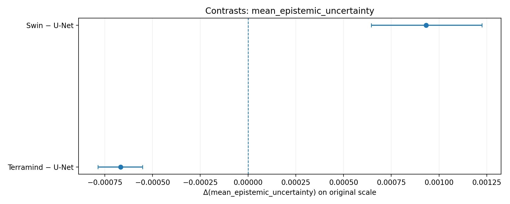
| scope | contrast | mean_original | hdi_lo_original | hdi_hi_original | Pr(Δ>ROPE) | Pr(|Δ|<ROPE) | Pr(Δ<-ROPE) | Pr(>0) |
|---|---|---|---|---|---|---|---|---|
| Overall (avg over arch) | PS − AE | -0.0002168 | -0.0004777 | 1.31e-05 | 0.8756 | 0.1021 | 0.02225 | 0.9444 |
| Overall (avg over arch) | S2 − AE | -0.0001184 | -0.0003678 | 0.0001479 | 0.9871 | 0.01188 | 0.001000 | 0.9960 |
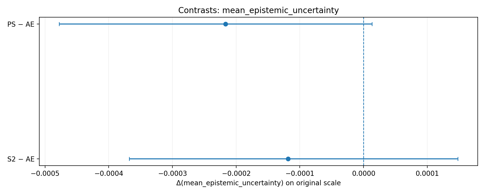
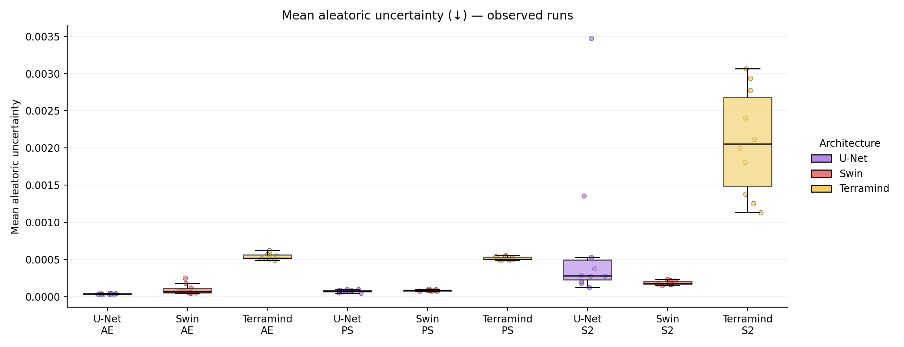
Modelled on log scale; reporting mu_orig on original scale. Hierarchical variance improves regularization.
| group | mean | sd | hdi_2.5% | hdi_97.5% | Pr(rank=1) | Pr(rank=2) | Pr(rank=3) | Pr(rank=4) | Pr(rank=5) | Pr(rank=6) | Pr(rank=7) | Pr(rank=8) | Pr(rank=9) | E[rank] | Pr(best) | Pr(best)_prior | sigma_mean | sigma_sd | sigma_hdi_lo | sigma_hdi_hi | Pr(Δ>ROPE) | Pr(|Δ|<ROPE) | Pr(Δ<-ROPE) |
|---|---|---|---|---|---|---|---|---|---|---|---|---|---|---|---|---|---|---|---|---|---|---|---|
| U-Net | AE | 0 | 0 | 0 | 0 | 0.9999 | 0.0001250 | 0 | 0 | 0 | 0 | 0 | 0 | 0 | 1.000 | 0.9999 | 0.1100 | 0.2060 | 0.05800 | 0.1140 | 0.3200 | NaN | NaN | NaN |
| U-Net | PS | 0 | 0 | 0 | 0 | 0 | 0.7200 | 0.2437 | 0.03625 | 0 | 0 | 0 | 0 | 0 | 2.316 | 0 | 0.1180 | 0.2750 | 0.07300 | 0.1580 | 0.4200 | 0 | 0 | 1.000 |
| Swin U-Net | AE | 0 | 0 | 0 | 0 | 0.0001250 | 0.2472 | 0.2915 | 0.4600 | 0.001125 | 0 | 0 | 0 | 0 | 3.215 | 0.0001250 | 0.1280 | 0.5900 | 0.1320 | 0.3730 | 0.8550 | 0.0001250 | 0.0001250 | 0.9998 |
| Swin U-Net | PS | 0 | 0 | 0 | 0 | 0 | 0.03263 | 0.4647 | 0.5026 | 0 | 0 | 0 | 0 | 0 | 3.470 | 0 | 0.1100 | 0.1180 | 0.03400 | 0.06600 | 0.1840 | 0 | 0 | 1.000 |
| Swin U-Net | S2 | 0 | 0 | 0 | 0 | 0 | 0 | 0 | 0.0008750 | 0.9900 | 0.009125 | 0 | 0 | 0 | 5.008 | 0 | 0.1180 | 0.1650 | 0.04700 | 0.08900 | 0.2560 | 0 | 0 | 1.000 |
| U-Net | S2 | 0 | 0 | 0 | 0.001000 | 0 | 0 | 0 | 0.0002500 | 0.008875 | 0.8534 | 0.03463 | 0.1029 | 0 | 6.231 | 0 | 0.1000 | 0.9010 | 0.1790 | 0.5820 | 1.246 | 0 | 0 | 1.000 |
| Terramind | PS | 0.001000 | 0 | 0 | 0.001000 | 0 | 0 | 0 | 0 | 0 | 0.1265 | 0.7906 | 0.08288 | 0 | 6.956 | 0 | 0.09800 | 0.05200 | 0.01500 | 0.02800 | 0.08200 | 0 | 0 | 1.000 |
| Terramind | AE | 0.001000 | 0 | 0.001000 | 0.001000 | 0 | 0 | 0 | 0 | 0 | 0.01100 | 0.1747 | 0.8143 | 0 | 7.803 | 0 | 0.1140 | 0.08300 | 0.02400 | 0.04700 | 0.1300 | 0 | 0 | 1.000 |
| Terramind | S2 | 0.002000 | 0 | 0.001000 | 0.002000 | 0 | 0 | 0 | 0 | 0 | 0 | 0 | 0 | 1.000 | 9.000 | 0 | 0.1040 | 0.3940 | 0.1000 | 0.2370 | 0.5930 | 0 | 0 | 1.000 |
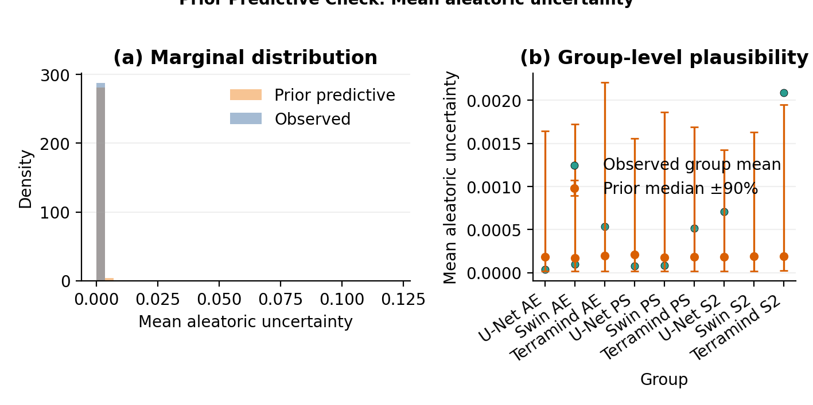
Check if priors are reasonable on original scale.
Red overlay shows model predictions; blue shows observed data.
For each adjacent pair in the expected-rank order, we report the probability that the higher-ranked group is (a) better, (b) meaningfully better (exceeds ROPE), or (c) practically tied (inside ROPE). ROPE is applied on the model's transformed scale for consistency.
| rank | group | next_rank_group | Δ_mean | Δ_lo | Δ_hi | Pr(better) | Pr(Δ>ROPE) | Pr(|Δ|<ROPE) | Pr(Δ<-ROPE) |
|---|---|---|---|---|---|---|---|---|---|
| 1 | U-Net | AE | U-Net | PS | 3.70e-05 | 2.24e-05 | 5.12e-05 | 1.000 | 1.000 | 0 | 0 |
| 2 | U-Net | PS | Swin U-Net | AE | 1.16e-05 | -2.11e-05 | 4.83e-05 | 0.7474 | 0.6589 | 0.1552 | 0.1859 |
| 3 | Swin U-Net | AE | Swin U-Net | PS | -3.90e-07 | -3.55e-05 | 2.94e-05 | 0.5336 | 0.4329 | 0.2024 | 0.3648 |
| 4 | Swin U-Net | PS | Swin U-Net | S2 | 0.0001010 | 8.08e-05 | 0.0001223 | 1.000 | 1.000 | 0 | 0 |
| 5 | Swin U-Net | S2 | U-Net | S2 | 0.0002101 | 1.51e-05 | 0.0004436 | 0.9909 | 0.9876 | 0.007125 | 0.005250 |
| 6 | U-Net | S2 | Terramind | PS | 0.0001173 | -0.0001125 | 0.0003122 | 0.8640 | 0.8194 | 0.08075 | 0.09988 |
| 7 | Terramind | PS | Terramind | AE | 2.17e-05 | -1.21e-05 | 5.52e-05 | 0.9076 | 0.4070 | 0.5854 | 0.007625 |
| 8 | Terramind | AE | Terramind | S2 | 0.001403 | 0.0009247 | 0.001889 | 1.000 | 1.000 | 0 | 0 |
For each adjacent pair in the expected-rank order, we report the probability that the higher-ranked group is (a) better, (b) meaningfully better (exceeds ROPE), or (c) practically tied (inside ROPE). ROPE is applied on the model's transformed scale for consistency.
| rank | group | next_rank_group | Δ_mean | Δ_lo | Δ_hi | Pr(better) | Pr(Δ>ROPE) | Pr(|Δ|<ROPE) | Pr(Δ<-ROPE) |
|---|---|---|---|---|---|---|---|---|---|
| 1 | U-Net | AE | U-Net | PS | 3.70e-05 | 2.24e-05 | 5.12e-05 | 1.000 | 1.000 | 0 | 0 |
| 2 | U-Net | PS | Swin U-Net | AE | 1.16e-05 | -2.11e-05 | 4.83e-05 | 0.7474 | 0.6589 | 0.1552 | 0.1859 |
| 3 | Swin U-Net | AE | Swin U-Net | PS | -3.90e-07 | -3.55e-05 | 2.94e-05 | 0.5336 | 0.4329 | 0.2024 | 0.3648 |
| 4 | Swin U-Net | PS | Swin U-Net | S2 | 0.0001010 | 8.08e-05 | 0.0001223 | 1.000 | 1.000 | 0 | 0 |
| 5 | Swin U-Net | S2 | U-Net | S2 | 0.0002101 | 1.51e-05 | 0.0004436 | 0.9909 | 0.9876 | 0.007125 | 0.005250 |
| 6 | U-Net | S2 | Terramind | PS | 0.0001173 | -0.0001125 | 0.0003122 | 0.8640 | 0.8194 | 0.08075 | 0.09988 |
| 7 | Terramind | PS | Terramind | AE | 2.17e-05 | -1.21e-05 | 5.52e-05 | 0.9076 | 0.4070 | 0.5854 | 0.007625 |
| 8 | Terramind | AE | Terramind | S2 | 0.001403 | 0.0009247 | 0.001889 | 1.000 | 1.000 | 0 | 0 |
All effects shown on natural, interpretable scales. Multiple BF bandwidths show robustness of evidence. ROPE probabilities add a practical-significance view (meaningful vs negligible effects).
| param | Pr(>0) | Pr(Δ>ROPE) | Pr(|Δ|<ROPE) | Pr(Δ<-ROPE) | Abs_Δ_mean | Abs_Δ_lo | Abs_Δ_hi | %_change | baseline |
|---|---|---|---|---|---|---|---|---|---|
| beta_dataset[AE] | 0 | 0 | 0 | 1.000 | -0.0002112 | -0.0002868 | -0.0001444 | -43.35 | 0.0004297 |
| beta_dataset[PS] | 0 | 0 | 0 | 1.000 | -0.0002049 | -0.0002738 | -0.0001380 | -29.20 | 0.0004297 |
| beta_arch[U-Net] | 0 | 0 | 0 | 1.000 | -0.0002606 | -0.0003253 | -0.0001953 | -50.65 | 0.0004297 |
| beta_arch[Swin] | 0 | 0 | 0 | 1.000 | -0.0003107 | -0.0003786 | -0.0002492 | -47.43 | 0.0004297 |
| beta_interaction[AE×U-Net] | 0 | 0 | 0.0001250 | 0.9999 | 8.01e-05 | 1.04e-05 | 0.0001556 | -34.79 | 0.0004297 |
| beta_interaction[AE×Swin] | 0.9991 | 0.9948 | 0.004875 | 0.0003750 | 0.0001747 | 9.99e-05 | 0.0002423 | 32.81 | 0.0004297 |
| beta_interaction[PS×U-Net] | 0.5327 | 0.3236 | 0.4144 | 0.2620 | 0.0001095 | 4.00e-05 | 0.0001842 | 1.215 | 0.0004297 |
| beta_interaction[PS×Swin] | 0.8784 | 0.7332 | 0.2233 | 0.04350 | 0.0001722 | 0.0001038 | 0.0002406 | 11.22 | 0.0004297 |
| beta_dataset[S2] | 1.000 | 1.000 | 0 | 0 | 0.0004162 | 0.0003006 | 0.0005418 | 150.91 | 0.0004297 |
| beta_arch[Terramind] | 1.000 | 1.000 | 0 | 0 | 0.0005713 | 0.0004492 | 0.0006973 | 287.78 | 0.0004297 |
| beta_interaction[AE×Terramind] | 0.9533 | 0.8784 | 0.1069 | 0.01475 | -0.0002548 | -0.0003961 | -0.0001189 | 16.86 | 0.0004297 |
| beta_interaction[PS×Terramind] | 0.1103 | 0.03650 | 0.2099 | 0.7536 | -0.0002818 | -0.0004090 | -0.0001439 | -10.11 | 0.0004297 |
| beta_interaction[S2×U-Net] | 1.000 | 0.9999 | 0.0001250 | 0 | -0.0001897 | -0.0003216 | -6.63e-05 | 53.31 | 0.0004297 |
| beta_interaction[S2×Swin] | 0 | 0 | 0 | 1.000 | -0.0003469 | -0.0004711 | -0.0002298 | -31.51 | 0.0004297 |
| beta_interaction[S2×Terramind] | 0.3191 | 0.1539 | 0.3844 | 0.4617 | 0.0005365 | 0.0003157 | 0.0007826 | -3.647 | 0.0004297 |
| dataset | arch | mean | hdi_lo | hdi_hi |
|---|---|---|---|---|
| AE | U-Net | 3.80e-05 | 2.84e-05 | 4.85e-05 |
| AE | Swin | 8.24e-05 | 6.14e-05 | 0.0001045 |
| AE | Terramind | 0.0005350 | 0.0003968 | 0.0006801 |
| PS | U-Net | 7.37e-05 | 5.46e-05 | 9.28e-05 |
| PS | Swin | 8.63e-05 | 6.44e-05 | 0.0001092 |
| PS | Terramind | 0.0005143 | 0.0003836 | 0.0006540 |
| S2 | U-Net | 0.0003956 | 0.0002922 | 0.0004979 |
| S2 | Swin | 0.0001883 | 0.0001408 | 0.0002387 |
| S2 | Terramind | 0.001954 | 0.001474 | 0.002511 |
| dataset | contrast | Δ_mean | Δ_lo | Δ_hi | Pr(Δ>ROPE) | Pr(|Δ|<ROPE) | Pr(Δ<-ROPE) | Pr(>0) |
|---|---|---|---|---|---|---|---|---|
| AE | Swin − U-Net | 4.44e-05 | 2.01e-05 | 6.76e-05 | 1.000 | 0 | 0 | 1.000 |
| AE | Terramind − U-Net | 0.0004970 | 0.0003605 | 0.0006448 | 1.000 | 0 | 0 | 1.000 |
| PS | Swin − U-Net | 1.26e-05 | -1.71e-05 | 4.21e-05 | 0.7284 | 0.1399 | 0.1318 | 0.8061 |
| PS | Terramind − U-Net | 0.0004406 | 0.0003100 | 0.0005855 | 1.000 | 0 | 0 | 1.000 |
| S2 | Swin − U-Net | -0.0002073 | -0.0003172 | -9.49e-05 | 0 | 0.0001250 | 0.9999 | 0 |
| S2 | Terramind − U-Net | 0.001558 | 0.001057 | 0.002106 | 1.000 | 0 | 0 | 1.000 |
| arch | contrast | Δ_mean | Δ_lo | Δ_hi | Pr(Δ>ROPE) | Pr(|Δ|<ROPE) | Pr(Δ<-ROPE) | Pr(>0) |
|---|---|---|---|---|---|---|---|---|
| U-Net | PS − AE | 3.57e-05 | 1.42e-05 | 5.77e-05 | 0.9995 | 0.0005000 | 0 | 0.9998 |
| U-Net | S2 − AE | 0.0003576 | 0.0002573 | 0.0004635 | 1.000 | 0 | 0 | 1.000 |
| Swin | PS − AE | 3.88e-06 | -2.67e-05 | 3.58e-05 | 0.4915 | 0.2060 | 0.3025 | 0.5992 |
| Swin | S2 − AE | 0.0001058 | 5.49e-05 | 0.0001633 | 0.9999 | 0.0001250 | 0 | 1.000 |
| Terramind | PS − AE | -2.07e-05 | -0.0002169 | 0.0001832 | 0.3240 | 0.1926 | 0.4834 | 0.4168 |
| Terramind | S2 − AE | 0.001419 | 0.0008996 | 0.001985 | 1.000 | 0 | 0 | 1.000 |
| scope | contrast | mean_original | hdi_lo_original | hdi_hi_original | Pr(Δ>ROPE) | Pr(|Δ|<ROPE) | Pr(Δ<-ROPE) | Pr(>0) |
|---|---|---|---|---|---|---|---|---|
| Overall (avg over datasets) | Swin − U-Net | -5.01e-05 | -9.11e-05 | -1.05e-05 | 0.5553 | 0.2976 | 0.1471 | 0.7251 |
| Overall (avg over datasets) | Terramind − U-Net | 0.0008319 | 0.0006541 | 0.001027 | 1.000 | 0 | 0 | 1.000 |
| scope | contrast | mean_original | hdi_lo_original | hdi_hi_original | Pr(Δ>ROPE) | Pr(|Δ|<ROPE) | Pr(Δ<-ROPE) | Pr(>0) |
|---|---|---|---|---|---|---|---|---|
| Overall (avg over arch) | PS − AE | 6.31e-06 | -6.32e-05 | 7.29e-05 | 0.9450 | 0.04963 | 0.005375 | 0.9791 |
| Overall (avg over arch) | S2 − AE | 0.0006274 | 0.0004483 | 0.0008197 | 1.000 | 0 | 0 | 1.000 |
Scoring mode: z. Standard z-score standardization: Uses mean and standard deviation per draw. Extreme z-values are clipped to [-8, 8] for stability.
Metric directions: Uncertainties (epistemic, aleatoric) are treated as lower-is-better (sign flipped before aggregation). Performance metrics (IoU, Dice, NSD) are higher-is-better. This ensures all metrics contribute consistently to the overall ranking.
Weights: Default is equal weighting across metrics. You can adjust via METRIC_WEIGHTS.
| group | Pr(rank=1) | Pr(rank=2) | Pr(rank=3) | Pr(rank=4) | Pr(rank=5) | Pr(rank=6) | Pr(rank=7) | Pr(rank=8) | Pr(rank=9) | E[rank] | Pr(best) | Pr(top2) | rank_ci90 | entropy_rank | N_eff_winners | Pr(Δ>ROPE) | Pr(|Δ|<ROPE) | Pr(Δ<-ROPE) | runner_up | Pr(win_vs_runnerup) | Pr(tie_vs_runnerup) | draw_index |
|---|---|---|---|---|---|---|---|---|---|---|---|---|---|---|---|---|---|---|---|---|---|---|
| U-Net | AE | 0.7799 | 0.2149 | 0.005250 | 0 | 0 | 0 | 0 | 0 | 0 | 1.225 | 0.7799 | 0.9948 | [1.0, 2.0] | 0.5519 | 1.537 | 0 | 1.000 | 0 | Swin U-Net | PS | 0.7925 | 0.9091 | 0.5850 |
| Swin U-Net | PS | 0.2051 | 0.7242 | 0.06800 | 0.002375 | 0.0002500 | 0 | 0 | 0 | 0 | 1.868 | 0.2051 | 0.9294 | [1.0, 3.0] | 0.7578 | 1.537 | 0 | 0.9969 | 0.003125 | NaN | NaN | NaN | |
| U-Net | PS | 0.01475 | 0.05738 | 0.7738 | 0.1174 | 0.03675 | 0 | 0 | 0 | 0 | 3.104 | 0.01475 | 0.07212 | [2.0, 4.0] | 0.7975 | 1.537 | 0 | 0.7944 | 0.2056 | NaN | NaN | NaN | |
| Swin U-Net | S2 | 0.0001250 | 0.003500 | 0.1304 | 0.6372 | 0.2288 | 0 | 0 | 0 | 0 | 4.091 | 0.0001250 | 0.003625 | [3.0, 5.0] | 0.9111 | 1.537 | 0 | 0.2466 | 0.7534 | NaN | NaN | NaN | |
| Swin U-Net | AE | 0.0001250 | 0 | 0.02262 | 0.2430 | 0.7342 | 0 | 0 | 0 | 0 | 4.711 | 0.0001250 | 0.0001250 | [4.0, 5.0] | 0.6574 | 1.537 | 0 | 0.05387 | 0.9461 | NaN | NaN | NaN | |
| Terramind | PS | 0 | 0 | 0 | 0 | 0 | 0.5218 | 0.4780 | 0.0002500 | 0 | 6.479 | 0 | 0 | [6.0, 7.0] | 0.6943 | 1.537 | 0 | 0 | 1.000 | NaN | NaN | NaN | |
| Terramind | AE | 0 | 0 | 0 | 0 | 0 | 0.4780 | 0.5216 | 0.0003750 | 0 | 6.522 | 0 | 0 | [6.0, 7.0] | 0.6953 | 1.537 | 0 | 0 | 1.000 | NaN | NaN | NaN | |
| Terramind | S2 | 0 | 0 | 0 | 0 | 0 | 0.0002500 | 0.0003750 | 0.9994 | 0 | 7.999 | 0 | 0 | [8.0, 8.0] | 0.005657 | 1.537 | 0 | 0 | 1.000 | NaN | NaN | NaN | |
| U-Net | S2 | 0 | 0 | 0 | 0 | 0 | 0 | 0 | 0 | 1.000 | 9.000 | 0 | 0 | [9.0, 9.0] | 0 | 1.537 | 0 | 0 | 1.000 | NaN | NaN | NaN |
This table shows the ranking of architectures averaged across all datasets. Each architecture's composite score is the average of its performance across datasets.
| group | Pr(rank=1) | Pr(rank=2) | Pr(rank=3) | E[rank] | Pr(best) | Pr(Δ>ROPE) | Pr(|Δ|<ROPE) | Pr(Δ<-ROPE) |
|---|---|---|---|---|---|---|---|---|
| Swin | 1.000 | 0 | 0 | 1.000 | 1.000 | 0 | 1.000 | 0 |
| U-Net | 0 | 1.000 | 0 | 2.000 | 0 | 0 | 0.005000 | 0.9950 |
| Terramind | 0 | 0 | 1.000 | 3.000 | 0 | 0 | 0 | 1.000 |
This table shows the ranking of datasets averaged across all architectures. Each dataset's composite score is the average of its performance across architectures.
| group | Pr(rank=1) | Pr(rank=2) | Pr(rank=3) | E[rank] | Pr(best) | Pr(Δ>ROPE) | Pr(|Δ|<ROPE) | Pr(Δ<-ROPE) |
|---|---|---|---|---|---|---|---|---|
| PS | 0.8431 | 0.1569 | 0 | 1.157 | 0.8431 | 0 | 1.000 | 0 |
| AE | 0.1569 | 0.8431 | 0 | 1.843 | 0.1569 | 0 | 1.000 | 0 |
| S2 | 0 | 0 | 1.000 | 3.000 | 0 | 0 | 0 | 1.000 |
Draw diagnostics compare the top-ranked group against the runner-up. Pr(win) is the probability the top group has higher composite score. Pr(tie) is the probability of a near-draw (|difference| < 0.1). Draw index measures decisiveness: 1.0 = clear winner, 0.0 = coin flip.
| metric | weight |
|---|---|
| IoU | 0.4000 |
| dice_coef | 0.1500 |
| mean_aleatoric_uncertainty | 0.05000 |
| mean_epistemic_uncertainty | 0.05000 |
| normalized_surface_distance | 0.3500 |